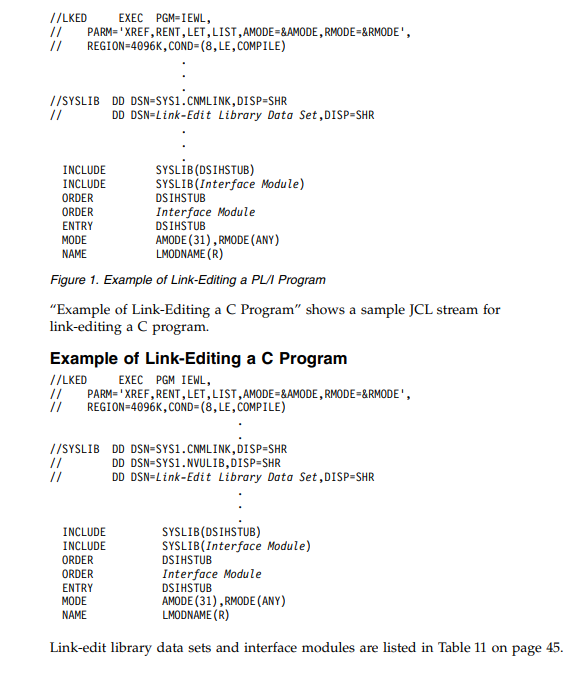

<html>
     <head>
    <title></title>
          <meta name="viewport" content="width=device-width, initial-scale=1.0">
        
     <link rel="stylesheet" href="https://maxcdn.bootstrapcdn.com/bootstrap/3.4.0/css/bootstrap.min.css">
         <script src="https://ajax.googleapis.com/ajax/libs/jquery/3.4.1/jquery.min.js"></script>
         <script src="https://maxcdn.bootstrapcdn.com/bootstrap/3.4.0/js/bootstrap.min.js"></script>
         <link rel="stylesheet" href="https://cdnjs.cloudflare.com/ajax/libs/font-awesome/4.7.0/css/font-awesome.min.css">
         <link rel="stylesheet" href="https://cdnjs.cloudflare.com/ajax/libs/font-awesome/4.7.0/css/font-awesome.min.css">
         <link rel="stylesheet" href ="style.css">
    </head>
    <style>
       
        
    </style>
    <body>
        <div class="ha1">
            <center>
                <h1><i>Programming: PL/I and C</i></h1>
            </center>
            <h3><b>Part 1. Overview</b></h3>
            <div class="g1" style="height: 5px; width: 100%; background: black;"></div>
            <h3>Chapter 1. High-level language services</h3>
            <p>You can use Tivoli NetView for z/OS V6.2.1 to manage complex, multivendor
networks and systems from a single point. This chapter describes NetView services
available for designing your command processor or installation exit routine.</p>
            <p><b>Note:</b>Note: Before reading this chapter, review the information in the IBM Tivoli NetView
for z/OS Customization Guide. You must have experience with the NetView program
and programming experience in PL/I or C for the tasks described in this book.</p>
            <div class="g1" style="height: 2px; width: 100%; background: black;"></div>
           
            <h4>Running synchronous commands</h4>
            <p>High-level language (HLL) command processors can call any NetView command,
including the following commands:</p>
             <ul class="b1">
               <li>Simple commands</li>
               <li>Command lists</li> 
                 <li>REXX command procedures</li> 
                  <li>Assembler command processors</li>
               <li>NetView applications such as the session monitor</li> 
                 <li>Other HLL command processors</li> 
            </ul>
            <p>The command must be executable in the calling environment. For example, data
services commands can be called only from a data services command processor.</p>
            <div class="g1" style="height: 2px; width: 100%; background: black;"></div>
            <h4>Sending commands (running asynchronous commanda</h4>
            <p>HLL installation exit routines cannot call NetView commands directly. However, all
HLL command processors and installation exit routines can schedule NetView
commands to be run asynchronously under any NetView task</p>
             <div class="g1" style="height: 2px; width: 100%; background: black;"></div>
            <h4>Client and server request response handling</h4>
            <p>The NetView program supports server tasks that service and reply to requests
from one or more operator tasks. This is accomplished by the following:</p>
            <ul class="b1">
                <li>v Allowing the requesting command processor to wait for the reply:</li>
                <ul class="b3">
                    <li>The requesting command processor suspends during the wait.</li>
                    <li>The task continues processing other commands.</li>
                    <li>The suspended command processor resumes processing after receiving the
reply.</li>
                </ul>
                <li>Allowing the requests and replies to be sent over NetView-to-NetView
cross-domain operator sessions.</li>
                <li>Correlating the reply with the correct activation of the requesting HLL command
processor. This correlation then allows multiple active instances of the requesting
command processor under a single operator task.</li>
            </ul>
            <div class="g1" style="height: 2px; width: 100%; background: black;"></div>
            <h4>Operator interaction</h4>
            <p>The following sections describe operator interaction in line mode and full-screen
mode.</p>
        </div>
        <div class="l1">
            <h4><b>Line mode input</b></h4>
            <p>HLL command processors running under an operator station task (OST),
NetView-NetView task (NNT), or primary program operator interface task (PPT)
can accept line mode input from an operator. This function is similar to that
provided by the NetView command list language &PAUSE statement, except that
the HLL command processor can continue to run while waiting for operator input.</p>
            <p>Operators do not need to know the language in which a command procedure is
written. They can use the GO command to provide input to a command procedure
written in the NetView command list language, REXX, or HLL. For more
information, see “GO command” on page 177.</p>
            <h4><b>Line mode output</b></h4>
            <p>HLL command processors and most installation exit routines can send line mode
output to the following receivers:</p>
            <ul class="b1">
            <li> A NetView operator</li>
            <li> The operating system console</li>
            <li> Another task</li>
            <li>A  group of operators defined by the NetView ASSIGN command</li></ul>
            <p>Multiline messages can be sent as a single unit using a multiline write-to-operator
(MLWTO) so that an operator receives them in sequence, with no messages
interspersed from other sources. This type of output appears on the command
facility panel or on the operating system console.</p>
            <h4><b>Full-screen input/output</b></h4>
            <p>HLL command processors can call the NetView VIEW command to provide
full-screen interaction with an operator. This function is similar to the use of the
VIEW command from a command list. You can also roll among NetView
applications, including HLL command processors. HLL command processors are
treated like command lists when determining roll groups. NetView also provides
the capability to asynchronously update a panel while it is being displayed.</p>
        </div>
        <div class="ha1">
             <div class="g1" style="height:2px; width: 100%; background: black;"></div>
            <h4>Data access</h4>
            <p>The following sections describe data access techniques available to HLL command
processors or installation exit routines</p>
        </div>
        <div class="l1">
        <h4><b>Message trapping</b></h4>
            <p>Frequently, command procedures must intercept or trap and process messages that
usually go to an operator. The NetView HLL application programming interface
(API) provides this function for single and multiline messages.</p>
            <h4><b>NetView message automation</b></h4>
            <p>NetView message automation can pass both single and multiline messages and
their resulting command strings to an HLL command processor. It also provides
services to alter the contents of the messages.</p>
            <h4><b>NetView MSU automation</b></h4>
            <p>The NetView automation table supports the automation of alerts and management
services units (MSUs). NetView MSU automation allows the invocation of HLL command processors from the automation table upon receipt of MSUs. NetView
also provides the command processor with access to the command and the MSU
that called the command.</p>
            <h4><b>System symbolic acces</b></h4>
            <p>HLL command processors and installation exits can query the values of the MVSand user-defined system symbolics, as well as the local NetView defined
&DOMAIN symbol. The &DOMAIN value is unique across the NetView program
in which the HLL command processor is running, while the MVS- and
user-defined system symbolics are unique across the z/OS system on which they
are defined</p>
            <h4><b>Command list variable access</b></h4>
            <p>NetView command lists and assembler command processors can store data in task
global and common global command list variables that can be accessed by other
command procedures. HLL command processors and installation exit routines can
access and update these variables.</p>
            <h4><b>Querying NetView information</b></h4>
            <p>HLL command processors and installation exit routines can query certain
information (such as domain ID or message attributes) about the current NetView
environment. This information is similar to that provided by control variables in
the NetView command list language and control block fields in assembly language</p>
            <h4>VSAM files</h4>
            <p>HLL data services command processors can read, write, update, and delete records
in VSAM files associated with the task under which the command processor is
running. Other command processors are allowed to run while the input/output
(I/O) requests are running.</p>
            <p>The pipeline facility supports the use of the CNMCMD service to call DSIVSAM
and DSIVSMX to access VSAM files. Refer to the IBM Tivoli NetView for z/OS
Command Reference or the NetView online help for information about DSIVSAM
and DSIVSMX</p>
            <h4>Data queue manipulation</h4>
            <p>An HLL command processor or installation exit routine can manipulate HLL data
queues. Each HLL command processor and installation exit routine has a set of
queues from which it can receive data. Each of these types of input data has a
queue:</p>
            <ul class="b1">
            <li>perator messages trapped for processing</li>
              <li>Input from a NetView operator</li>
                  <li>Data from another HLL command processor or installation exit routine</li>
                  <li>Initial data associated with the following messages or MSUs:</li>
                <ul class="b3">
                <li>The full message or MSU that caused an HLL command processor to be
called</li>
                <li>The full message that caused DSIEX02A to be called</li>
                <li>The multiple domain support message unit (MDS-MU) for unsolicited
requests or asynchronous replies</li></ul>
                <li>Data solicited over the communication network management (CNM) interface</li>
                <li>MDS-MUs received synchronously</li>
            </ul>
        </div>
         <div class="ha1">
             <div class="g1" style="height:2px; width: 100%; background: black;"></div>
             <h4>Logical Unit 6.2 transport</h4>
             <p>The NetView logical unit 6.2 (LU 6.2) transport is a programming interface that
implements designed protocols to enable applications in network nodes to
communicate using conversations over LU 6.2 sessions</p>
             <p>The NetView LU 6.2 transport consists of two similar application programming
interfaces: the management services (MS) transport and the high performance
transport. For applications that run in NetView, each transport provides a
high-level programming interface to mask the LU 6.2 complexities. An application
registered with the appropriate transport can send data in designed envelopes to a
partner application and receive data in return.</p>
             <p>Although both transports provide the same functions and mask the LU 6.2
complexities, each transport offers its own advantages.</p>
             <h5><b>High Performance Transport</b></h5>
             <ul class="b1">
             <li>Uses different LU 6.2 protocols that are faster than the protocols used by the MS
transport</li>
             <li>Provides general error notification rather than specific error notification about
data.</li>
             <li>Enables programmers to define session parameters such as RU size.</li></ul>
             <h5><b>MS Transport</b></h5>
             <ul class="b1">
             <li>Uses LU 6.2 conversation protocols that generate more network traffic than the
high performance transport protocols to transport each piece of data.</li>
             <li>Guarantees delivery of data or specific error notification about the data.</li></ul>
             <p>Refer to the <i>IBM Tivoli NetView for z/OS Application Programmer's Guide</i> for a more
detailed description of the LU 6.2 transports.</p>
             <div class="g1" style="height:2px; width: 100%; background: black;"></div>
             <h4>Operating remote systems</h4>
             <p>With operations management support, you can use operations management served
applications that are provided by the NetView program or written by users to send
designed operations management data to be run on remote systems. Operations
management makes it possible to have a command routed to the appropriate
command processor to be run in the target system, and to get the acceptance
reports, completion reports, and other delayed replies from the target system back
to the operator controlling that system. In this way, the system can be activated or
deactivated by command, the system clock can be set, and other device–specific
commands can be set to operate the system remotely.</p>
              <div class="g1" style="height:2px; width: 100%; background: black;"></div>
             <h4>Communication Network Management Interface</h4>
             <p>HLL data services command processors can send and receive data over the
communication network management (CNM) interface. The CNM interface is used
to forward commands to and collect data from devices in the network. For
example, response time monitor (RTM) data is collected from PU type 2 control
units using the CNM interface. HLL command processors can also process
unsolicited data received over the CNM interface. Solicited replies are
pseudo-synchronous</p>
             <div class="g1" style="height:2px; width: 100%; background: black;"></div>
             <h4>NetView partitioned data set</h4>
             <p>HLL command processors and installation exit routines have read access to the
NetView partitioned data sets. This enables you to write a program using the
information in the NetView partitioned data sets. This function is completely
synchronous.</p>
             <div class="g1" style="height:2px; width: 100%; background: black;"></div>
             <h4>Dynamic file allocation/deallocation</h4>
             <p>NetView provides facilities to dynamically allocate and deallocate files by using
NetView ALLOCATE and FREE commands. Refer to the NetView online help for
more information.</p>
             <p>When allocated, these files can be accessed using the file I/O facilities present in
the language being used.</p>
             <div class="g1" style="height:2px; width: 100%; background: black;"></div>
             <h4>Storage copying</h4>
             <p>HLL command processors and installation exit routines can make a copy of any
area of virtual storage in the NetView address space in which the HLL command
processor or installation exit routine is running. A request to copy an area outside
of this space results in a return code instead of an 0C4 ABEND. This feature is
useful for debugging because it enables you to intercept and act upon a return
code instead of failing with a hard abend</p>
             <p><b>Note:</b>Ensure that the storage area to which the copy is made belongs to your
program.</p>
              <div class="g1" style="height:2px; width: 100%; background: black;"></div>
             <h4>Named storage</h4>
             <p>HLL command processors or installation exit routines can allocate and free an area
of virtual storage and associate a name with it so that other HLL command
processors and installation exit routines running under the same task can access
this area of storage. Transaction-oriented applications can use this function to save
data across transactions</p>
             <div class="g1" style="height:2px; width: 100%; background: black;"></div>
             <h4>User-defined lock management</h4>
             <p>HLL command processors and installation exit routines can obtain, release, and test
the control of a named lock. The lock management scheme uses a simple
alphanumeric hierarchy. Locking is useful when updating common global
variables, or to serialize any other common resource.</p>
              <div class="g1" style="height:2px; width: 100%; background: black;"></div>
             <h4>Parsing character strings</h4>
             <p>A parsing service is provided as part of the HLL support for PL/I. This service is
similar to the SSCANF function available in the C language and is intended to
facilitate the parsing of commands and messages</p>
              <div class="g1" style="height:2px; width: 100%; background: black;"></div>
             <h4>Command authorization checking</h4>
             <p>The NetView command authorization services can be called by HLL command
processors and installation exit routines to determine whether a particular operator
is authorized to issue a command with restricted operands or operand values</p>
              <div class="g1" style="height:2px; width: 100%; background: black;"></div>
             <h4>NetView message logging</h4>
             <p>All HLL command processors and most installation exit routines can send message
output to the following logs:</p>
             <ul class="b1">
             <li>The network log</li>
             <li>An external log such as system management facilities (SMF)</li>
             <li>A sequential log</li>
             </ul>
             <div class="g1" style="height:2px; width: 100%; background: black;"></div>
             <h4>NetView message logging</h4>
             <p>The NetView Bridge option allows data to be transported between a NetView
system running in a z/OS environment and a non-NetView database. This option
is useful when you must access a non-NetView database to create and update
problem records, or to access and retrieve configuration data. The NetView Bridge
is also an effective means of connecting an active NetView installation to other
databases by using user-written command procedures</p>
             <p>For additional information about the NetView Bridge option, refer to the<i>
Information Management for z/OS Guide to Integrating with Tivoli Applications.</i></p>
              <div class="g1" style="height:2px; width: 100%; background: black;"></div>
             <h4>NetView Bridge remote access</h4>
             <p>on hosts other than the one in which the transaction was generated. You can collect
data from the resources in your network, and create and update records in a
database residing in another system. NetView Bridge remote access can operate
from a NetView program running on a z/OS operating system. Transactions are
forwarded to the resident host by using the high performance transport API to
access a z/OS system running both NetView Bridge and NetView Bridge remote
access.</p>
              <div class="g1" style="height:2px; width: 100%; background: black;"></div>
             <h4>Debugging support</h4>
             <p>The NetView HLL API provides two debugging tools for users: an interactive
debugger that displays the operands and results of all HLL API service routine
invocations, and a continuous first failure data capture trace for ABEND
debugging.</p>
             <p>In addition, you can use the NetView internal trace. For more information, see the
                 <i>IBM Tivoli NetView for z/OS Troubleshooting Guide</i></p></div>
        <div class="l1">
             
             <h4>Remote Interactive Debugger (RID)</h4>
            <p>The RID enables NetView HLL service routine calls to be trapped and displayed to
the programmer. You can implement RID using NetView commands and messages
to create debugging procedures using NetView command list language, REXX, or
HLL command procedures. In addition, because the NetView program provides
facilities to route commands and messages to remote systems, use RID from one
system to debug an HLL command processor or installation exit routine running
on another system</p>
            <p>RID operates at the subtask level, so using RID to stop an HLL command
processor or installation exit routine running under one subtask does not affect
other subtasks in the same NetView address space</p>
            <h4>First Failure Data Capture Trace (FFDCT)</h4>
            <p>Each HLL command processor or installation exit routine maintains an 8-entry
continuously wrapping trace area. Trace entries are recorded at entry to, and exit
from, HLL service routines and at other key points inside the HLL routines. In the
event of an ABEND, this area gives some indication of what was occurring before
the ABEND. For more information, see the <i>IBM Tivoli NetView for z/OS
                Troubleshooting Guide.</i></p>
        </div>
        <div class="ha1">
            <div class="g1" style="height:4px; width: 100%; background: black;"></div><br>
                <h3>Chapter 2. HLL installation exit routines</h3>
                <p>This chapter contains product-sensitive programming interfaces and associated
guidance information provided by the NetView program.</p>
                <p>You can write installation exit routines to view, delete, or replace data flowing to,
from, or through the NetView program. For example, your code can examine the
messages passing through the NetView program, record relevant data, and initiate
work requests based on the data. In addition, your code can delete any
unnecessary messages from further processing or substitute a modified message in
place of the original message. Thus, installation exit routines can handle a specific
event with nonstandard processing and automate processes based on message
information.</p>
             <div class="g1" style="height:2px; width: 100%; background: black;"></div>
            <h4>Overview of installation exit routines</h4>
            <p>There are two types of installation exits for which you can write routines:</p>
            <ul class="b1">
            <li>Global installation exits (DSIEXnn), which apply to all NetView tasks. The global
installation exit routines are loaded when the NetView program starts. See
Table 1 on page 13 for a list of installation exits.</li>
            <li>DST installation exits (XITnn and BNJPALEX), which apply only to DSTs. The
DST installation exit routines are loaded when their DST starts. Each DST can
have its own set of installation exit routines.</li></ul>
            <p><b>Note:</b>Changes do not take effect until you recycle the NetView program.</p>
            <p>Each installation exit handles a particular event, such as the reception of data from
the system console. When that event occurs, control is passed to the appropriate
installation exit routine for processing. After processing, the installation exit routine
returns control and passes a return code to the NetView program. Optionally, up to
10 DST installation exit routines can be concatenated. If the first exit did not
indicate USERDROP, the NetView program then calls the next one in the sequence.
This process continues until the last DST exit has returned control to the program.</p>
            <p>For more information about input to the installation exit routines, see Chapter 6,
“Coding HLL command processors and installation exits,” on page 49 and
Chapter 8, “Coding your C program interfaces and restrictions,” on page 103</p>
            </div>
        <div class="l1">
            <h4>Coding restrictions</h4>
            <p>The following HLL service routines cannot be called from any installation exit:</p>
            <ul class="l1">
            <li>CNMCMD</li>
            <li>CNMCNMI</li>
            <li>CNMKIO</li></ul>
            <p>In addition, CNMSMSG cannot be issued from DSIEX04 and DSIEX09. Only
CNMSMSG with a destination type of TASK can be issued from DSIEX02A.
DSIEX02A, DSIEX04, and DSIEX09 can be called only in the mainline environment
if written in HLL. If written in assembler, these installation exit routines can be
called in both the mainline and the interruption request block (IRB) exit
environments. Refer to IBM Tivoli NetView for z/OS Programming: Assembler for
additional information about exits running in the IRB exit environment</p>
            <h4>performance considerations</h4>
            <p>Preinitialized environments can significantly improve the performance of
installation exits written in PL/I and C. Instead of repeatedly allocating and
deallocating environments for each invocation of an installation exit routine, the
NetView program manages global pools of preinitialized environments. Exit
routines can then run in these environments, without initializing them, each time
an exit program is run.</p>
            <p>Preinitialized environments are supported in all NetView-supported releases of
PL/I and in the z/OS Language Environment®
. See Chapter 4, “Preinitialized and
non-preinitialized environments,” on page 33 for more information about
preinitialized environments.</p>
            <p><b>Note:</b>Note: Programs compiled with Enterprise PL/I for z/OS cannot use NetView's
preinitialized language environments.</p>
            <p>Avoid coding installation exits for frequently called functions, such as VSAM
input/output (I/O), because performance can be degraded significantly.</p>
            <h4>General return codes</h4>
            <p>Unless otherwise noted, installation exit routines pass the following return codes to
the NetView program in the return code field (HLBRC for PL/I or Hlbrc for C) to
indicate that the messages are to be unchanged, deleted, or replaced:</p>
        </div>
        <div class="l2">
            <h5><b>USERASIS (0)</b></h5>
            <p>Use the message as presented to the installation exit; do not delete or
replace it</p>
            <h5><b>USERDROP (4)</b></h5>
            <p>Delete the message from the terminal and from the network log, system
log, and hardcopy log; stop processing before the message appears on the
screen. For more information about how to delete messages, see “Deleting
messages.”</p>
             <h5><b>USERSWAP (8)</b></h5>
            <p>Replace the message with the modified CMDBUF (Cmdbuf). For more
information, see “Replacing messages.</p>
        </div>
        <div class="l1">
            <h4>Deleting messages</h4>
            <p>To delete a message entirely, use return code USERDROP.</p><br>
            <p>When the NetView program receives a USERDROP return code, no further
installation exit routines are called. Thus, if you have concatenated DST installation
exit routines, a USERDROP return code prevents the next installation exit routine
from being called.</p>
            <h4>Replacing messages</h4>
            <p>To replace a message, use return code USERSWAP and set the input CMDBUF
                <i>(Cmdbuf) </i>contents to the desired data. For installation exits written in PL/I, the
replacement data must be less than or equal in length to the original CMDBUF
                <i>(Cmdbuf)</i> data; otherwise it is truncated to the original length of the CMDBUF
               <i> (Cmdbuf) </i>data</p>
            <p>For installation exits written in C, the replacement data must be less than or equal
in length to the original CMDBUF (Cmdbuf) data. If the replacement data is longer
than the original data, storage overlay can occur which causes abends and other
unpredictable results.</p>
            <p>Installation exit DSIEX02A provides a more flexible interface for replacing
messages using CNMALTD. See “CNMALTD (CNMALTDATA): alter data on a
queue” on page 183.</p>
            <p>You can concatenate DST installation exit routines when replacing messages. In this
case, the buffer containing the replacement message becomes the input for the
subsequent DST installation exit routine. Refer to IBM Tivoli NetView for z/OS
Programming: Assembler for message flows.</p>
            <p>Table 1 lists all HLL installation exits and the task environments under which they
can be called</p>
        </div>
        <div class="t1">
            <p1><i>Table 1. Installation Exit Environments</i></p1>
            <center>
                <table bgcolor="black;" width="100%">
                <tr bgcolor="white">
                    <th width="15%;">Exist</th>
                    <th width="30%;"> Description</th>
                    <th width="40%">Applicable Tasks</th>
                    <th>Associated Samples</th>
                </tr>
                <tr bgcolor="white">
                    <td>BNJPALEX</td>
                    <td> Not supported in HLL</td>
                    <td>  </td>
                    <td>  </td>
                </tr>
                <tr bgcolor="white">
                    <td>DSIEX01</td>
                    <td> Not supported in HLL</td>
                    <td>  </td>
                    <td>  </td>
                </tr>
                 <tr bgcolor="white">
                    <td>DSIEX02A</td>
                    <td> Message output this domain
or Message output cross-domain</td>
                    <td> OST, PPT NNT, OST, CNMCSSIR </td>
                    <td> CNMS4213, CNMS4243 </td>
                </tr>
               
                 <tr bgcolor="white">
                    <td>DSIEX03</td>
                    <td> nput before command processing (1)</td>
                    <td> NNT, OST, PPT </td>
                    <td> CNMS4210, CNMS4211,
CNMS4212, CNMS4240,
CNMS4241, CNMS4242 </td>
                </tr>
                    <tr bgcolor="white">
                    <td>DSIEX041</td>
                    <td> Input before command processing (L</td>
                    <td>Main task or any subtask  </td>
                        <td>  </td> 
                    </tr>
                     <tr bgcolor="white">
                    <td>DSIEX05</td>
                    <td> Solicited VTAM messages</td>
                    <td>NNT, OST, PP  </td>
                        <td>  </td> 
                    </tr>
                     <tr bgcolor="white">
                    <td>DSIEX06</td>
                    <td> Input before command processing (L</td>
                    <td>NNT, OST, PP  </td>
                        <td>  </td> 
                    </tr>
                     <tr bgcolor="white">
                    <td>DSIEX07</td>
                    <td> ross-domain command send</td>
                    <td>NNT, OST  </td>
                        <td>  </td> 
                    </tr>
                     <tr bgcolor="white">
                    <td>DSIEX09</td>
                    <td> Output to the system console</td>
                    <td>Main task or any subtask  </td>
                        <td>  </td> 
                    </tr>
                     <tr bgcolor="white">
                    <td>DSIEX11</td>
                    <td> Unsolicited VTAM messages (2)</td>
                    <td>PPT  </td>
                        <td>  </td> 
                    </tr>
                     <tr bgcolor="white">
                    <td>DSIEX14</td>
                    <td> efore logging off</td>
                    <td>NNT, OST  </td>
                        <td>  </td> 
                    </tr>
                    <tr bgcolor="white">
                    <td>DSIEX14</td>
                    <td> efore logging off</td>
                    <td>NNT, OST  </td>
                        <td>  </td> 
                    </tr>
                    <tr bgcolor="white">
                    <td>DSIEX17</td>
                    <td> Not supported in HLL</td>
                    <td>  </td>
                        <td>  </td> 
                    </tr>
                    <tr bgcolor="white">
                    <td>DSIEX20</td>
                    <td> Not supported in HLL</td>
                    <td>  </td>
                        <td>  </td> 
                    </tr>
                    <tr bgcolor="white">
                    <td>DSIEX21</td>
                    <td> Encryption key for DSITCPRF</td>
                    <td>CNMTAMEL  </td>
                        <td>DSIEX21  </td> 
                    </tr>
                     <tr bgcolor="white">
                    <td>XITCO</td>
                    <td> CNM interface output</td>
                    <td>DST  </td>
                        <td>  </td> 
                    </tr>
                     <tr bgcolor="white">
                    <td>XITDI</td>
                    <td> DST initialization</td>
                    <td>DST  </td>
                        <td>CNMS4220, CNMS4223,
CNMS4250, CNMS4253  </td> 
                    </tr>
                     <tr bgcolor="white">
                    <td>XITCO</td>
                    <td> CNM interface output</td>
                    <td>DST  </td>
                        <td>  </td> 
                    </tr>
                     <tr bgcolor="white">
                    <td>XITVO</td>
                    <td> VSAM output</td>
                    <td>DST  </td>
                        <td>  </td> 
                    </tr>
                  
                
            </table><br>
                </center>
        </div>
        <div class="ha1">
             <div class="g1" style="height:2px; width: 100%; background: black;"></div>
            <h4>Installation exits</h4>
            <p>The NetView program provides a number of installation exits that are described in
the following sections. For a description of message flows and interception points
in OSTs, NNTs, and PPTs, refer to IBM Tivoli NetView for z/OS Programming:
Assembler.</p>
        </div>
        <div class="l1">
        <h4>BNJPALEX: Alert generation exit routine</h4>
            <p>This exit is available only through assembly language. Refer to <i>IBM Tivoli NetView
for z/OS Programming: Assembler </i>for a description of the exit.</p>
            <h4>DSIEX01: Input from the operato</h4>
            <p>This exit is available only through assembly language. Refer to <i>IBM Tivoli NetView
for z/OS Programming: Assembler </i>for a description of the exit.</p>
            <h4>DSIEX02A: Output to the operator</h4>
            <p><b><i>Description</i></b>Description: The NetView program calls DSIEX02A just before &WAIT (or WAIT)
message processing and before the automation table is scanned to determine
processing actions. DSIEX02A is called for standard output to an operator’s
terminal. DSIEX02A runs before the device-dependent output is inserted and the
data is logged. If DSIEX02A is called, DSIEX04 is not called because logging
options can be specified in either DSIEX02A or the NetView automation table</p>
            <p><b><i>Example of use</i></b>: Because the message has been formatted but not yet displayed or
logged, you can use DSIEX02A to delete or replace the message before it is
automated, logged, or displayed. Messages are reformatted by removing, changing,
and adding new buffers to the original message. DSIEX02A prevents OVERRIDE
command options from taking effect for messages.</p>
            <p><b><i>Coding Consideration:</i></b>NetView automation is called after this installation exit
routine has been called. Therefore, any changes made for messages in this
installation exit can affect NetView automation. NetView automation is not called
for a message that has been deleted by this installation exit routine</p>
           <p>CNMSMSG can be issued from DSIEX02A, but only with the destination type of
TASK. The message resulting from the CNMSMSG call does not re-drive
DSIEX02A</p> 
            <p><b><i>Return Code</i></b>The DSIEX02A user exit sets register 15 to 0 when it returns control
to the NetView program</p>
            <ul class="b4">
            <p><b>Note:</b></p>
            <li>Do not use the USERSWAP return code to swap messages. Use the CNMALTD
service. See “CNMALTD (CNMALTDATA): alter data on a queue” on page 183</li>
             <li>Do not use the USERSWAP return code to swap messages. Use the CNMALTD
service. See “CNMALTD (CNMALTDATA): alter data on a queue” on page 183</li></ul>
            <h4>DSIEX03: Input before command processing</h4>
            <p><b><i>Description:</i></b>All regular commands call DSIEX03. Regular commands include
commands</p><ul class="b1">
            <li>Issued by a command procedure</li>
            <li>Received from another subtask</li>
            <li>Used to start the hardcopy log at logon</li>
            <li>Used as the initial command</li>
            <li>Entered as simulated terminal inpu</li>
            <li>Resulting from the NetView automation table</li>
            <li>Entered for an MVS console operator task</li>
            <li>Entered from a terminal</li>
            <li>Queued using the EXCMD command</li>
            </ul>
            <p>Before running, all commands are passed to either DSIEX01 or DSIEX03.
Immediate commands are passed to DSIEX01. Regular commands entered from a
command facility panel are passed to DSIEX01 and DSIEX03. The remaining
command types previously listed are passed to DSIEX03.</p>
            <p><b><i>Example of use:</i></b>Example of Use: If your conditions are more complex than those provided by the
authority table for NetView commands, you can use DSIEX03 to restrict the use of
particular regular commands.</p>
            <h4>DSIEX04: Log output</h4>
             <p><b><i>Description</i></b>Description: The NetView program calls DSIEX02A just before &WAIT (or WAIT)
message processing and before the automation table is scanned to determine
processing actions. DSIEX02A is called for standard output to an operator’s
terminal. DSIEX02A runs before the device-dependent output is inserted and the
data is logged. If DSIEX02A is called, DSIEX04 is not called because logging
options can be specified in either DSIEX02A or the NetView automation table</p>
            <p><b><i>Example of use</i></b>: Because the message has been formatted but not yet displayed or
logged, you can use DSIEX02A to delete or replace the message before it is
automated, logged, or displayed. Messages are reformatted by removing, changing,
and adding new buffers to the original message. DSIEX02A prevents OVERRIDE
command options from taking effect for messages.</p>
            <p><b><i>Coding Consideration:</i></b>NetView automation is called after this installation exit
routine has been called. Therefore, any changes made for messages in this
installation exit can affect NetView automation. NetView automation is not called
for a message that has been deleted by this installation exit routine</p>
           <p>CNMSMSG can be issued from DSIEX02A, but only with the destination type of
TASK. The message resulting from the CNMSMSG call does not re-drive
DSIEX02A</p> 
            <p><b><i>Return Code</i></b>The DSIEX02A user exit sets register 15 to 0 when it returns control
to the NetView program</p>
        </div>
        <div class="l2">
            <h5>USERLOG (12)</h5>
            <p>Write the message to the network or MVS system log only</p>
              <h5>USERLOG (16)</h5>
            <p>Write the message to the network or MVS system log only</p>
              <h5>USERLOG (120)</h5>
            <p>Write the message to the network or MVS system log only</p>
              <h5>USERLOG (24)</h5>
            <p>Write the substituted message to the hardcopy log onlyy</p>
            <h5>USERLOG (28)</h5>
            <p>Do not write to the MVS system log.</p>
             <h5>USERLOG (28)</h5>
            <p>Do not write to the MVS system log. Use the substituted message to write
to the network log, external trace log, and the hardcopy log.</p>
        </div>
        <div class="l1">
            <h4>DSIEX05: Before VTAM command invocation</h4>
            <p><b><i>description:</i></b>The NetView program calls DSIEX05 when preparing to pass a
command to VTAM through the program operator interface (POI); domain
qualifiers have been removed and all span checking has been completed.</p>
            <p><b><i>Example of use</i></b> You can use DSIEX05 to verify that an operator is authorized to
issue a particular command.</p>
            <p><b><i>Coding Consideration:</i></b>This exit applies only to commands entered directly, without using the MVS command, that are p</p>
            <p>Commands passed to DSIEX05 have already been processed under DSIEX03 (and
possibly DSIEX01).</p>
            <h4>DSIEX06: Solicited VTAM messages</h4>
            <p><b><i>description:</i></b>The NetView program calls DSIEX06 when it receives a solicited
VTAM message, which is generated in response to a VTAM command the user or
the PPT issued. The message has not yet been processed or logged</p>
            <p><b><i>Example of use</i></b>You can use DSIEX06 to change the message number or text of a
VTAM message or to process VTAM messages</p>
            <p><b><i>Coding Consideration:</i></b>: This exit applies only to responses to commands entered
directly, without using the MVS command, that are passed through the NetVie</p>
            <p>NetView automation is called after this installation exit routine has been called.
Therefore, any changes made to messages in this installation exit can affect
NetView automation. NetView automation is not called for a message that has
been deleted by this installation exit routine.</p>
            <p>Messages processed (and not dropped) in DSIEX06 are later processed by
DSIEX02A.</p>
            <h4>DSIEX07: Cross-domain command sen</h4>
            <p><b><i>description:</i></b>The NetView program calls DSIEX07 before commands are sent
cross-domain to an NNT. </p>
            <p><b><i>Example of use</i></b>You can use DSIEX07 to monitor cross-domain traffic through the
network.</p>
            <h4>DSIEX09: Output to the system console</h4>
            <p><b><i>description:</i></b>The NetView program calls DSIEX09 when a message is written to the
system console operator using the DSIWCS macro. The message has not been
formatted for transmission. Refer to IBM Tivoli NetView for z/OS Programming:
Assembler for a description of the DSIWCS macro.</p>
            <p><b><i>Example of use</i></b> You can use DSIEX09 to edit messages sent to the system console</p>
            <p><b><i>Coding Consideration:</i></b> DSIEX09 is called as a result of DSIWCS macro calls. The
output of the MVS console OST is processed by DSIEX02A instead of DSIEX09</p>
             <h4>DSIEX11: Unsolicited VTAM messages</h4>
            <p><b><i>description:</i></b>The NetView program calls DSIEX09 when a message is written to the
system console operator using the DSIWCS macro. The message has not been
formatted for transmission. Refer to IBM Tivoli NetView for z/OS Programming:
Assembler for a description of the DSIWCS macro.</p>
            <p><b><i>Example of use</i></b> You can use DSIEX09 to edit messages sent to the system console</p>
            <p><b><i>Coding Consideration:</i></b> DSIEX09 is called as a result of DSIWCS macro calls. The
output of the MVS console OST is processed by DSIEX02A instead of DSIEX09</p>
            <h4>DSIEX12: Logon validation</h4>
            <p><b><i>description:</i></b>The NetView program calls DSIEX09 when a message is written to the
system console operator using the DSIWCS macro. The message has not been
formatted for transmission. Refer to IBM Tivoli NetView for z/OS Programming:
Assembler for a description of the DSIWCS macro.</p>
            <p><b><i>Example of use</i></b> You can use DSIEX09 to edit messages sent to the system console</p>
            <p><b><i>Non-Takeover and Takeover Operator Task Processing:</i></b>When DSIEX12 gets control
for a non-takeover or a takeover operator task, the input to DSIEX12 includes the
takeover operator ID name field.</p>
            <p>For a non-takeover logon, the operator ID is listed in the Operator ID name field
and the Takeover Operator ID field is blank</p>
            <p>For a takeover logon, the value "takeover" is listed in the Operator ID field and
the Takeover Operator ID name field contains the operator ID that is taken over</p>
            <p>For a takeover operator task, DSIEX12 is called mainly to validate the operator ID
and password. Therefore, first check the Operator ID field to determine if this exit
was called for a takeover operator task.</p>
            <p><i><b>Coding Consideration</b></i>If the installation exit routine issues a return code of 0, the
logon proceeds. If specified, your hardcopy log starts and the initial command
runs. If the issued return code is nonzero, the operator is logged off</p>
            <p>This exit is called under all OSTs and NNTs, including unattended operator and
MVS console operator tasks.</p>
            <p>The accompanying structure maps the header information in the CMDBUF buffer
(Cmdbuf) that is passed to the DSIEX12 exit. OFFSET and LENGTH values are
given in bytes.</p>
        </div>
        <div class="tb2">
            <table>
                <tr>
                    <th>Offset</th>
                    <th>Length</th>
                    <th>Function</th>
                </tr>
                <tr>
                    <td>0</td>
                    <td>8</td>
                    <td>Operator ID name or "takeover"</td>
                </tr>
                 <tr>
                    <td>8</td>
                    <td>8</td>
                    <td>Operator LU name"</td>
                </tr>
                 <tr>
                    <td>16</td>
                    <td>8</td>
                    <td>Password</td>
                </tr>
                 <tr>
                    <td>24</td>
                    <td>8</td>
                    <td>Hardcopy device nam</td>
                </tr>
                 <tr>
                    <td>32</td>
                    <td>8</td>
                    <td>Profile name</td>
                </tr>
                 <tr>
                    <td>40</td>
                    <td>8</td>
                    <td>New password</td>
                </tr>
                  <tr>
                    <td>48</td>
                    <td>8</td>
                    <td>Takeover Operator ID. The operator I</td>
                </tr>
            </table>
        </div>
        <div class="l1">
            <h4>DSIEX13: OST/NNT message receiver</h4>
            <p><b><i>Description:</i></b>: When certain subtask-subtask communication buffers are received on
a subtask resulting from the use of the DSIMQS macro on another task, the
NetView program calls DSIEX13. DSIEX13 is called when:</p>
            <ul class="b1">
            <li>A user-defined internal function request (IFRCODCR) is received through the
DSIMQS macro for an OST, a NetView-to-NetView task (NNT), or a primary
POI task (PPT).</li>
            <li>A message buffer (with HDRMTYPE=HDRTYPEM) is received through the
DSIMQS macro on OSTs or NNTs</li></ul>
            <p><b>Note:</b>: The DSI039I message is an example of a HDRTYPEM message received by
an OST or NNT. The DSI039I message has a HDRMTYPE=HDRTYPEN when sent
to the PPT. In addition, the PPT does not call DSIEX13 for any other HDRTYPEM
buffer. </p>
            <p><b><i>Example of use:</i></b>You can use DSIEX13 with IFRCODCR to initiate a user function
with a buffer. Code DSIEX13 to perform the user function specified by IFRCODCR.
The IFRCODCR message buffer can be sent (using the DSIMQS macro) to another
task or queued to the task that you are running. Refer to IBM Tivoli NetView for
z/OS Programming: Assembler for more information about internal function requests</p>
            <p>You can also use DSIEX13 to monitor DSI039I messages received by OSTs or NNTs</p>
            <p><b><i>Return Code:</i></b>HDRTYPEM messages and IFRCODCR buffers are treated
differently</p>
            <ul class="b1">
            <li>The NetView program does not process IFRCODCR buffers after DSIEX13 is
called. The NetView program frees the buffer using DSIFRE. This method is
consistent with the method used with other buffers that are received through
DSIMQS.</li>
            <li>HDRTYPEM buffers are displayed unless the return code USERDROP is used.
The following occur for displayed messages just as for typical NetView
messages</li>
            <ul class="b3">
                <li>DSIEX02A and DSIEX16 exits are called.</li>
                <li>Automation is called</li>
                <li>Automation table processing occurs.</li>The messages are logged.</ul></ul>
            <h4>DSIEX14: Before logoff</h4>
            <p><b>Description:<i></i></b>The NetView program calls DSIEX14 when an OST or NNT is
preparing to end for any of these reasons:</p>
            <ul class="b1">
            <li>If LOGOFF is entered at the operator’s terminal</li>
            <li>If the subtask LOSTERM exit is driven (VTAM).</li></ul>
            <p>The exit cannot communicate with the operator’s terminal. However, you can write
to the system console and write entries to the log.</p>
            <p><b><i>Example of use:</i></b>You can use DSIEX14 to save accounting information, update
tables, or free storage</p>
            <p><b><i>Non-Takeover and Takeover Operator Task Processing:</i></b> For a non-takeover operator
task, the NetView program calls DSIEX12 after a logon is accepted. When the task
ends (for example, the operator logs off), the NetView program calls DSIEX14.</p>
            <p>For a takeover operator task, the NetView program calls DSIEX12 as mentioned
above. For this type of task, DSIEX12 is called mainly to validate the operator ID
and password. When the takeover processing completes, the task for the session
that is being taken over is the task used for the session, and the takeover operator
task is cleaned up. For the takeover task processing, the NetView program does
not call DSIEX14.</p>
            <p><b><i>Coding Considerations</i></b>Because a buffer is not associated with logoff processing,
DSIEX14 does not receive an input buffer (the length of the command buffer is 0).</p>
            <p><b><i>Return Codes: </i></b>The NetView program ignores any return code received from this
installation exit routine</p>
            <h4>DSIEX16: Post-automation table installation exit for messages</h4>
            <p>This exit is available only through an assembler interface. Refer to<i> IBM Tivoli
                NetView for z/OS Programming: Assembler</i> for more information.</p>
             <h4>DSIEX16B: Post-automation table installation exit for MSUs</h4>
            <p>This exit is available only through an assembler interface. Refer to<i> IBM Tivoli
                NetView for z/OS Programming: Assembler</i> for more information.</p>
             <h4>DSIEX17: MVS message and DOM receive</h4>
            <p>This exit is available only through an assembler interface. Refer to<i> IBM Tivoli
                NetView for z/OS Programming: Assembler</i> for more information.</p>
             <h4>DSIEX18: Log browse installation exit</h4>
            <p>This exit is available only through an assembler interface. Refer to<i> IBM Tivoli
                NetView for z/OS Programming: Assembler</i> for more information.</p>
            <h4>DSIEX19: RUNCMD Installation exit</h4>
            <p><b><i>Decription:</i></b>: The NetView RUNCMD exit DSIEX19 is called after usual command
security checking has authorized the use of the RUNCMD command. The text
following the RUNCMD command verb is passed to the exit</p>
              <p><b><i>Example of use:</i></b>: You can use DSIEX19 to provide security checking at the service
point command level. This security checking can be done by calling CNMSCOP or
by using your own technique. To use CNMSCOP for security checking, you can
define a CMDDEF statement in CNMCMD specifying DSISPCMD. You can then
define command, keyword, and value authorization checking based on the
CMDDEF statement. For example, to define the service point command ADP to
enable checking with CNMSCOP, define:
CMDDEF.ADP.MOD=DSISPCMD</p>
              <p><b><i>Code Consideration:</i></b>The following input is provided to DSIEX19 upon
invocation of the exit in the DSIUSE control block: v DSIEX19 is passed a read-only copy of a command buffer in the USERMSG
field. Table 3 on page 21 shows the exit parameters in the CMDBUF passed to
the exit.</p>
            
        </div>
        
      <div class="tb2">
            <table>
                <tr>
                    <th >Offset</th>
                    <th >Length</th>
                    <th >Function</th>
                </tr>
                <tr>
                    <td>0</td>
                    <td>8</td>
                    <td>User ID against which command authorization checking was
done for the RUNCMD</td>
                </tr>
                 <tr>
                    <td>8</td>
                    <td>8</td>
                    <td>Reserved</td>
                </tr>
                 
                 <tr>
                    <td>16</td>
                    <td>80</td>
                    <td>Security product token for the source issuer of the RUNCMD,
if available.</td>
                </tr>
                 <tr>
                    <td>96</td>
                    <td>8</td>
                    <td>The service point name entered on the RUNCMD.</td>
                </tr>
                 <tr>
                    <td>104</td>
                    <td>8</td>
                    <td>The service point application entered on the RUNCMD</td>
                </tr>
                <tr>
                    <td>122</td>
                    <td>Variable</td>
                    <td>The service point command string. The length of the string
varies, dependent on the individual command string</td>
                </tr>
            </table>
        </div>
        
        <div class="l1">
            <p><b><i>Return Code:</i></b>DSIEX19 can pass these return codes:</p>
            <p><b><i>Any return code other than USERASIS</i></b>Discontinue RUNCMD processing. Message BNH192E is to be issued
indicating that processing of the RUNCMD has stopped</p>
            <h4>DSIEX20: SAW exit</h4>
            <p>This exit is available only through an assembler interface. Refer to IBM Tivoli
NetView for z/OS Programming: Assembler for more information.</p>
            <h4>DSIEX21: Encryption key for DSITCPRF installation exit</h4>
            <p>The DSIZKNYJ command is used to edit encrypted definition member DSITCPRF
in DSIPRF. Refer to the IBM Tivoli NetView for z/OS Security Reference for more
information</p>
            <h4>XITBN: BSAM empty file</h4>
            <p><b><i>Description</i></b>The DST calls XITBN if the DST encounters a BSAM open failure
because of an empty data set or file</p>
             <p><b><i>Example of use:</i></b>You can use XITBN to place a record in the empty data set. Code
this installation exit only if you want to write a BSAM subtask using the DST as a
base.</p>
             <p><b><i>Coding Conservation:</i></b>XITBN can use only the service facilities available to th</p>
             <p><b><i>Return Code:</i></b>To initialize the BSAM data set or file, return the USERSWAP return
code and set the command buffer to the record to be used. A return code other
than USERSWAP causes the DST to end.</p>
            <h4>XITBO: BSAM output</h4>
            <p><i><b>Description:</b></i>The DST calls XITBO immediately before the record is written to the
BSAM database.</p>
            <p><i><b>Example of use:</b></i>The DST calls XITBO immediately before the record is written to the
BSAM database.</p>
            <p><i><b>Coding Conservation:</b></i>XITBO can use only the service facilities available to the</p>
            <h4>XITCI: CNM interface input</h4>
            <p><i><b>Description:</b></i>The DST calls XITCI after communication network management
(CNM) interface data is received through the CNM interface or MS transport.</p>
            <p><i><b>Example of use:</b></i>: You can use XITCI to modify CNM input data for the hardware
monitor. </p>
            <p><i><b>Coding Conservation:</b></i>XITCI can use only the service facilities available to theDST</p>
            <p>If you specify USERSWAP (8), the substitute buffer must contain a valid network
services request unit (RU) of the same type as the input RU. Refer to the SNA
library for a description of RU formats</p>
            <p>DSICRTR is the subtask responsible for routing RECMS, RECFMS, ROUTE-INOP, CNM, NMVT, and cross-domain alerts. XITCI called under the DSICRTR subtask
provides access to unsolicited CNM data before the NetView program routing</p>
            <p>Control point management services units (CP-MSUs) and MDS-MUs are not routed
through DSICRTR and are only accessible under the BNJDSERV subtask.</p>
            <p>XITCI called under a DST other than DSICRTR can access CNM data routed to
that particular subtask.</p>
            <p>Network services request units are routed as shown in Table 4.</p>
        </div>
        <div class="tb2">
            <table>
                <tr>
                    <th>Request</th>
                    <th>Header Value</th>
                    <th>Receving Subtask</th>
                </tr>
                <tr>
                    <td>RECMS</td>
                    <td>X'010381</td>
                    <td>BNJDSER</td>
                </tr>
                 <tr>
                    <td>RECFMS</td>
                    <td>X'410384'</td>
                    <td>AAUTSKLP, BNJDSERV</td>
                </tr>
                 <tr>
                    <td></td>
                    <td></td>
                    <td></td>
                </tr>
                 <tr>
                    <td>ROUTE-INOP</td>
                    <td>X'410289'</td>
                    <td>AAUTSKLP</td>
                </tr>
                 <tr>
                    <td>CNM</td>
                    <td>X'810814</td>
                    <td>AAUTSKLP</td>
                </tr>
                 <tr>
                    <td>NMVT</td>
                    <td>X'41038D'</td>
                    <td>AAUTSKLP, BNJDSERV, DSIGDS</td>
                </tr>
                 <tr>
                    <td>CP-MSU</td>
                    <td>X'1212'</td>
                    <td>BNJDSERV, DSIGDS</td>
                </tr>
                 <tr>
                    <td>Cross-domain alert</td>
                    <td>X'1040'</td>
                    <td> BNJDSERV</td>
                </tr>
                
            </table>
            <p style="margin-bottom: 0px; margin-top: 10px;" ><i>Table 5. Routing of RUs by Major Vector Key</i></p>
            <table>
                <tr>
                    <th>Major Vector Key</th>
                    <th>Description</th>
                    <th>REceiving Substack</th>
                </tr>
                <tr>
                    <td>X'0000'</td>
                    <td>Alert</td>
                    <td>BNJDSERV</td>
                </tr>
                <tr>
                    <td>X'0001</td>
                    <td>Link event</td>
                    <td>BNJDSERV</td>
                </tr>
                <tr>
                    <td>X'0002</td>
                    <td>Resolution</td>
                    <td>BNJDSERV</td>
                </tr>
                <tr>
                    <td>X'000f</td>
                    <td>CMIP statics</td>
                    <td>BNJDSERV</td>
                </tr>
                <tr>
                    <td>X'0010</td>
                    <td>Trace</td>
                    <td>AAUTSKLP</td>
                </tr>
                <tr>
                    <td>X'0025</td>
                    <td>PD satatics</td>
                    <td>BNJDSERV</td>
                </tr>
                <tr>
                    <td>X'006F'</td>
                    <td>Send message to operator</td>
                    <td>DSIGDS</td>
                </tr>
                <tr>
                    <td>X'0080' </td>
                    <td>RTM</td>
                    <td>AAUTSKLP</td>
                </tr>
                <tr>
                    <td>X'132E'</td>
                    <td>RECFMS envelope</td>
                    <td>BNJDSERV</td>
                </tr>
                <tr>
                    <td>X'13FF'</td>
                    <td>Reserved</td>
                    <td>BNJDSERV</td>
                </tr>
                <tr>
                    <td>X'154D</td>
                    <td>Routing and targeting instruction</td>
                    <td>BNJDSERV</td>
                </tr>
            </table>
            <p>The focal point transfer RU header is part of the communication network
management (CNM) router support. All cross-domain unsolicited alert data is
routed to the CNM router, and the focal point transfer RU header carries
management services information between distributed host and the focal point.</p>
            <p>The fields in the focal point transfer RU header are listed in Table 6.</p>
             <p style="margin-bottom: 0px; margin-top: 10px;" ><i>Table 6. Focal Point transfer RU header</i></p>
            <table>
                <tr>
                    <th>Offset</th>
                    <th>Name</th>
                    <th>Length</th>
                    <th>Description</th>
                </tr>
                <tr>
                    <td>0</td>
                    <td> HDR LEN</td>
                    <td>2 bytes, binary</td>
                    <td>Length of the total RU (includes RU header
and NMVT)</td>
                </tr>
                <tr>
                    <td>2</td>
                    <td> HDR ID</td>
                    <td>2 bytes</td>
                    <td>Always X'1040'</td>
                </tr>
                <tr>
                    <td>4</td>
                    <td> Reserved</td>
                    <td>11 bytes</td>
                    <td>For NetView use only</td>
                </tr>
                <tr>
                    <td>15</td>
                    <td> DOMID LEN</td>
                    <td> 1 byte, binary</td>
                    <td> Originator's domain ID length</td>
                </tr>
                <tr>
                    <td>24</td>
                    <td> Reserved</td>
                    <td>20 bytes</td>
                    <td>For NetView use only</td>
                </tr>
                <tr>
                    <td>44</td>
                    <td>Name</td>
                    <td>variable</td>
                    <td>NMVT data</td>
                </tr>
            </table><br>
        </div>
        <div class="l1">
            <p>If the data is an alert forwarded using the NV-UNIQ/LUC alert forwarding
protocol, the first 44 bytes of the data are mapped by the focal point transfer RU
and the remainder of the data is the actual network management vector transport
(NMVT)</p>
            <p>The first 2 bytes of the focal point transfer RU contain the length of the entire
buffer (FPT RU + NMVT). The next 2 bytes contain the header ID, which is always
X'1040'. The 16th byte contains the length of the originating domain ID. When
returning a substitute buffer, do not modify the focal point transfer RU (the first 44
bytes); replace only the NMVT portion of the buffer with a valid NMVT.For more information about the format of a specific RU, refer to the SNA library
and NCP and EP Reference Summary and Data Areas</p>
            <p><b><i>Return Code:</i></b>XITCI can use two other return codes in addition to USERASIS,
USERDROP, and USERSWAP.</p>
        </div>
        <div class="l2">
            <h4>USEREXLG (252)</h4>
            <p>The hardware monitor, running under the BNJDSERV task, records the
message only to system management facilities (SMF) and then discards it.
No data is logged to the database. This processing is the same for all alerts
including forwarded alerts. This occurs when you designate NPDA
REPORTS ON. Refer to the NetView online help for more information
about the REPORTS command.</p>
            <h4>USEREVNT (253)</h4>
            <p>The hardware monitor, running under task BNJDSERV, records the
message as an event or statistic on its database, but not as an alert. The
hardware monitor recording filters are not applied to the message as they
would be normally. Instead, the ESREC filter is set to PASS and all other
recording filters are set to BLOCK.</p>
            <p>For SNA-MDS forwarded alerts from non-NetView entry points, only event
data is recorded to the database; this processing is the same as for local
alerts that are not forwarded. For NV-UNIQ/LUC alert forwarding
protocol forwarded alerts and SNA-MDS forwarded alerts from an entry
point NetView, no data is recorded to the database.</p>
            <p>Refer to the description for the SRFILTER command in the NetView online
help for an explanation of the recording filters</p>
        </div>
        <div class="l1">
            <p><b>Note:</b>Alerts for which the XITCI installation exit was not driven are still logged in
hardware monitor as alerts</p>
            <p>If return code USEREXLG (252) or USEREVNT (253) is returned for an input
record, the input record is not processed as an alert. The hardware monitor alert
recording filter is not passed, so the input record is not forwarded to the alert focal
point</p>
            <p>Messages that are blocked as a result of a filter from the rate function might not be
automated. You can use the AUTORATE statement to control this</p>
            <h4>XITCO: CNM interface output</h4>
            <p><b><i>Description:</i></b>The DST calls XITCO prior to a request for CNM interface output.</p>
            <p><b><i>Example of use:</i></b>You can use XITCO to modify the request for CNM data (forward</p>
            <p><b><i>Coding Consideration:</i></b>XITCO can use only the service facilities available to the
DST. If a substitute buffer is returned, the data must be a valid SNA RU.</p>
            <h4>XITDI: Data services task initialization</h4>
            <p><b><i>Description:</i></b>The DST calls XITDI for each statement read by the DST during
initialization. When the end of file is reached, this installation exit is entered and
the length of the input command buffer is 0. You can code up to 10 module names
for each user-written exit routine. See Chapter 3, “HLL Data Services command
processors,” on page 27 for more information about XITDI during DST
initialization.</p>
            <p><b><i>Example of Use:</i></b>You can add XITDI to the DST initialization deck to provide user
initialization values to DST initialization</p>
            <p><b><i>Code Consideration:</i></b>Do not replace the DST XITDI exits that are provided with
the NetView program.</p>
            <p>XITDI can use only the service facilities available to the DST subtask.</p>
            <p><b>Note:</b>If all initialization data is to be processed by XITDI, specify the DST
initialization statement that identifies XITDI as the first statement in the DST
initialization member</p>
            <p><b><i>Return code:</i></b>XITDI can prevent the DST from processing a definition statement
by passing return code USERDROP</p>
            <p>When XITDI is called for an end-of-file situation, a nonzero return code indicates
that the DST must be stopped.</p>
            <h4>XITVN: VSAM empty file</h4>
            <p><b><i>Description:</i></b>The DST calls XITVN if the DST encounters a VSAM open failure
because of an empty data set or file</p>
            <p><b><i>Example of use:</i></b>You can use XITVN to place a record in the empty data set. The
NetView program provides its own XITVN for VSAM logs generated under DST. Code this installation exit only if you want to write your own VSAM subtask using
DST as a base</p>
            <p><b><i>Coding Consideration:</i></b>XITVN can use only the service facilities available to the</p>
            <p style="margin-bottom: 0px;"><b>Note:</b></p>
            <ul class="b3">
                <li>Only VSAM key-sequenced data sets are supported.</li>
                <li>Do not replace the XITVN exits that are provided with the NetView program
for the DSILOG and DSITRACE subtasks</li>
            </ul>
            <p><b><i>Return Code:</i></b>To initialize the VSAM data set or file, return the USERSWAP return
code and set the command buffer to the record to be used. A return code other
than USERSWAP causes the DST to end.</p>
            <h4>XITVO: VSAM output</h4>
            <p><b><i>Description:</i></b>The DST calls XITVO immediately before the record is written to the
VSAM database through the CNMKIO service.</p>
            <p><b><i>Example of use:</i></b>You can use XITVO to modify the record before it is sent to the
VSAM data set or file.</p>
            <p><b><i>Coding Consideration:</i></b>XITVO can use only the service facilities available to the
DST. The text portion is mapped by DSILOGDS when using this exit for the
DSILOG task.</p>
            <p>Avoid coding installation exits for frequently called functions, such as VSAM I/O,
because performance can be degraded significantly</p>
            <h4>XITXL: External logging</h4>
            <p><b><i>Description:</i></b>: The DST calls XITXL whenever data is to be sent to an external log
using CNMSMSG with the EXTLOG operand. For example, the session monitor
performs external logging of response time and configuration data.</p>
            <p><b><i>Example Of use:</i></b>You can use XITXL to write user-defined data to a user-defined
log.</p>
            <p><b><i>Coding Consideration</i></b>XITXL can use only the service facilities available to the
DST. You can use the following offsets (in byte values) to access the CMDBUF (Cmdbuf</p>
             </div>
        <div class="tb2">
            <p style="margin-bottom: 0px;"><i>Table 7. 
                XITXL Buffer Parameters</i></p>
            <table>
                <tr>
                    <th>Offset</th>
                    <th>Length</th>
                    <th>Name</th>
                    <th>Function</th>
                </tr>
                <tr>
                    <td>0</td>
                    <td>2</td>
                    <td>ELBLENG</td>
                    <td>Unsigned length of header</td>
                </tr>
                 <tr>
                    <td>2</td>
                    <td>2</td>
                    <td>ELBRLENG</td>
                    <td>Unsigned length of record</td>
                </tr>
                 <tr>
                    <td>4</td>
                    <td>1</td>
                    <td>ELBTYPE</td>
                    <td>Log type</td>
                </tr>
                 <tr>
                    <td>5</td>
                    <td>3</td>
                    <td>ELBLOG</td>
                    <td>EBCDIC log type</td>
                </tr>
                 <tr>
                    <td>8</td>
                    <td>4</td>
                    <td></td>
                    <td>Reserved by NetView</td>
                </tr>
                 <tr>
                    <td>12</td>
                    <td></td>
                    <td></td>
                    <td>Start of record</td>
                </tr>
                 
            </table><br>
       </div>
        <div class="ha1">
              
            <div class="g1" style="height: 4px; width: 100%; background: black;"></div>
            <h3>Chapter 3. HLL Data Services command processors</h3>
            <p>HLL command processors that use the CNMCNMI and CNMKIO services must
run under a DST. The DST provides the underlying interfaces required by both
CNMCNMI and CNMKIO.</p>
            <p>A DST is a set of NetView interfaces built on top of the NetView optional task
base. The NetView optional task is described in IBM Tivoli NetView for z/OS
Programming: Assembler. A DST provides a subtask processing module (DSIZDST)
together with the following interfaces:</p>
            <ul class="b1">
                <li>An initialization exit</li>
                <li>A data services command processor (DSCP) that provides support for VSAM
(through CNMKIO) and CNMI (through CNMCNMI)</li>
                <li>Various installation exits. See Table 1 on page 13.</li>
            </ul>
            <p>or more information about the TASK and DSTINIT statements referenced in this
                chapter, refer to <i>IBM Tivoli NetView for z/OS Administration Reference.</i></p>
             <div class="g1" style="height: 2px; width: 100%; background: black;"></div>
            <h4>Installing the Data Services tas</h4>
            <p>To install the data services task, code a TASK statement for the DST subtask in the
CNMSTUSR or CxxSTGEN member. For information about adding CNMSTYLE
                statements, <i>see IBM Tivoli NetView for z/OS Installation: Getting Started.</i></p>
            <p>When the DST is started, the initialization data set specified by the MEM keyword
on the TASK statement is read, and the DSTINIT statements are processed.</p>
            <ul class="b1">
                <li>FUNCT - Specifies which DST services are required. In all cases, the ability to
call HLL DSCPs is provided. The function choices are:
OTHER
The DST does not require the CNMI or VSAM interfaces.
BOTH Both the VSAM and CNMI interfaces are required.
CNMI Only the CNMI interface is required.
VSAM
Only the VSAM interface is required.</li>
                <li>XITDI - Specifies the name of the user-provided initialization exit. The exit is
called with the standard NetView installation exit interface, as documented in
Chapter 2, “HLL installation exit routines,” on page 11. This exit is called once
for every statement in the specified initialization member (MEM keyword of
TASK statement). When the end of file is reached, the length of CMDBUF
(Cmdbuf) is 0</li>
            </ul>
            <p>For each statement (except end-of-file condition), the standard installation exit
return codes cause these actions:</p>
        </div>
        <div class="l2">
            <h4>USERASIS (0)</h4>
            <p>The statement is processed by the NetView DST module (DSIZDST). If it
is not a valid DSTINIT statement, DSIZDST rejects it with an error
message and continues processing.</p>
            <h4>USERDROP (4)</h4>
            <p>The statement is not processed by DSIZDST. Use this return code if your
installation exit is going to process the statement. (You can define your
own initialization statements)</p>
            <h4>USERSWAP (8)</h4>
            <p>The swapped buffer is processed by DSIZDST. If the swapped buffer
does not contain a valid DSTINIT statement, it is rejected by DSIZDST
and processing continues</p>
        </div>
        <div class="ha1">
            <p>When returning from the last call (for end of file), any nonzero return code ends
the DST. Termination occurs only if the initialization process fails.</p>
             <div class="g1" style="height: 2px; width: 100%; background: black;"></div>
            <h4>Data Services command processors</h4>
            <p>Command processors running under DSTs are called data services command
processors (DSCP) and must be defined as TYPE=D (DST only) or TYPE=RD
(regular or DST). The next sections describe services that are available to DSCPs.</p>
        </div>
        <div class="l1">
            <h4>CNM Data Services</h4>
            <p>You must define an APPL definition with AUTH=CNM to VTAM for the DST (use
the TSKID name as the APPL name). The DST provides access to both solicited and
unsolicited CNM data. You can use CNMCNMI to solicit CNM data from the
network. You can define an HLL DSCP to receive unsolicited CNM data from
VTAM.</p>
            <h5><b>Unsolicited CNM data interface</b></h5>
            <p>VTAM provides a default table (ISTMGC01) that controls the routing of unsolicited
CNM RUs. You can write a supplemental table (ISTMGC00) to override the default
routing information provided by VTAM. The routing information consists of a
particular RU type and the name of an application that is to receive the particular
type of data</p>
            <p>When a DST is defined with CNM services, an access method control block (ACB)
is opened with an ACB name (the application name) equivalent to the task name
as defined by the TSKID operand in the DST TASK definition statement. (The one
exception is the hardware monitor, whose CNMI DST task name is BNJDSERV, but
the application name is BNJHWMON.) If the DST task name is entered as the
application name in the VTAM routing table, the unsolicited data RU is passed to
the unsolicited data services command processor for that DST</p>
            <p>The following DSTINIT keywords are related to the unsolicited CNM data
interface:</p>
            <ul class="b1">
                <li>UNSOL - Specifies the command verb name of the module that is to serve as the
unsolicited DSCP for this DST. The unsolicited DSCP must not issue the
CNMCNMI macro, but can issue the CNMKIO macro.</li>
                <li>DSRBU - Specifies the number of unsolicited data services request blocks
(DSRBs) that are to be allocated to this DST. If unsolicited CNM data will not be
processed by this DST, set this value to 0; otherwise set it to 1.</li>
            </ul>
            <p>When the unsolicited HLL DSCP receives control, CNMDBUF (Cmdbuf) contains
the unsolicited data RU.</p>
            <h5><b>Solicited CNM data interface</b></h5>
            <p>An HLL DSCP can use CNMCNMI to acquire communications network
management data from the network.The DSTINIT keyword DSRBO specifies the number of solicited DSRBs that are
required by this task and limits the number of concurrent CNMCNMI or CNMKIO
requests, or both. This value must be at least 1 and no greater than 862. (A DSCP is
not called until a solicited DSRB is available.</p>
            <h4>VSAM services</h4>
            <p>A DSCP can call the CNMKIO service routine to perform input or output for a
specified VSAM data set. The following DSTINIT keywords are related to
CNMKIO service routine:</p>
            <ul class="b1">
            <li>DSRBO - Specifies the number of solicited DSRBs that are required by this task,
and limits the number of concurrent CNMCNMI or CNMKIO service routines,
or both. This value must be at least 1 and no greater than 862. (A DSCP is not
called until a solicited DSRB is available.)</li>
                <li>PDDNM - Specifies the ddname of the primary data set to be used by VSAM
service</li>
                <li>PPASS - Specifies the VSAM password to be used when the primary data set
ACB is opened.</li>
                <li>SDDNM - Specifies the ddname of the secondary data set to be used by VSAM
services. Use the NetView SWITCH command to control which data set is the
active data set</li>
                <li>SPASS - Specifies the VSAM password to be used when the secondary data set
ACB is opened.</li>
                <li>MACRF - Specifies local resource sharing</li>
                <li>XITVI - Specifies an installation exit to receive control upon input from the
VSAM data set before the input record is passed to the requesting DSCP.</li>
                <li>XITVN - Specifies an installation exit to receive control when an empty VSAM
data set has been opened for processing. This exit enables you to put an
initialization record into the data set</li>
                <li>XITVO - Specifies an installation exit to receive control before output of a record
to the VSAM data set.</li>
            </ul>
            <h4>User-defined services</h4>
            <p>HLL command processors defined as TYPE=D or TYPE=RD can be called under
the DST to perform user-defined functions in addition to CNMKIO or CNMCNMI
functions.</p>
        </div>
        <div class="ha1">
            <div class="g1" style="height: 2px; width: 100%; background: black;"></div>
            <h4>Scheduling commands under the DST</h4>
            <p>You use the CNMSMSG service routine to schedule a DSCP and, with the WAIT
command, to wait for the DSCP to send back the results of the scheduled work.
For samples of DSCPs and installation exit routines, see Appendix B, “PL/I
samples,” on page 271 for PL/I, and Appendix D, “C samples,” on page 281 for C</p><br><br>
            <div class="g1" style="height: 4px; width: 100%; background: black;"></div>
            <h3>Part 2. Enabling a high-level language program</h3><br>
             <div class="g1" style="height: 4px; width: 100%; background: black;"></div>
            <h3>Chapter 4. Preinitialized and non-preinitialized environments</h3>
            <p>The NetView program supports preinitialized and non-preinitialized environments
for PL/I and C programs.</p>
            <p>If you use non-preinitialized environments, a unique environment is set up and
freed each time a program is run.</p>
            <p>Preinitialized environments significantly improve the performance of command
processors and installation exits. Instead of repeatedly allocating and deallocating
environments for each invocation of a command processor or installation exit, the
NetView program manages a global pool of preinitialized environments. Command
processors or installation exits are then able to enter and exit these environments
more efficiently</p>
            <p>The NetView program supports regular and critical preinitialized environments.
Critical preinitialized environments are reserved for programs that always run in a
preinitialized environment. Regular preinitialized environments are available to all
preinitialization-enabled programs.</p>
            <div class="g1" style="height: 2px; width: 100%; background: black;"></div>
            <h4>Languages supported</h4>
            <p style="margin-bottom: 0px;">Languages supported</p>
            <ul class="b1">
                <li>z/OS C and C++</li>
                <li>IBM PL/I for MVS and VM V1R1M1 and Enterprise PL/I for z/OS
The minimum version of Enterprise PL/I for z/OS is V3R9M0.</li>
            </ul>
            <p><b>Note:</b>Programs compiled with Enterprise PL/I for z/OS cannot use NetView's
preinitialized language environments</p>
            <div class="g1" style="height: 2px; width: 100%; background: black;"></div>
            <h4>Advantages and disadvantages of preinitialized environments</h4>
            <p>The steps required to run your program in a non-preinitialized environment are
fewer than those required to run with preinitialized environments. But, by running
non-preinitialized you lose the performance enhancements available with
preinitialized environments</p>
            <p>Preinitialized environments have a predefined set of options and are allocated a
predefined initial amount of storage which is increased in fixed increments. If your
program requires different runtime options, it cannot be run preinitialized. For
information about runtime options, see Chapter 6, “Coding HLL command
processors and installation exits,” on page 49 and Chapter 8, “Coding your C
program interfaces and restrictions,” on page 103. For information about defining
the size of your preinitialized environments, see “HLLENV command” on page 36</p>
            <p>The following programs are good candidates for running in a preinitialized
environment:</p>
            <ul class="b1">
                <li>Installation exits</li>
                <li>Frequently used command processors that run for a brief period such as those
called from the NetView automation tableRun programs in a non-preinitialized environment if any of the following
statements are true: </li>
                <li>Initialization overhead is smaller than the overall runtime of the program.</li>
                <li>The program is used infrequently</li>
                <li>The program must run with more STACK or HEAP storage than that defined for
the preinitialized environment. When your program runs in a preinitialized
environment, the HLLENV PSTACK and PHEAP values for the preinitialized
environment are used instead of the values defined in your program. See
“HLLENV command” on page 36 for more information.</li>
                <li> It is a PL/I program that:</li>
                <ul class="b3">
                    <li>Uses language-specific file I/O, excluding stream-oriented output to
SYSPRINT.</li>
                    <li>Uses CONTROLLED variables</li>
                    <li>Uses FETCH and RELEASE statements. </li>
                    <li>Uses the STOP statement.</li>
                    <li>Starts an assembler routine containing SVC LINK</li>
                    <li>Uses the EXIT statement</li>
                </ul>
                <li>It is a C program that:</li>
                <ul class="b3">
                    <li>Uses the exit() statement</li>
                    <li>Starts an assembler routine containing SVC LINK.</li>
                </ul>
            </ul>
            <p><b>Note:</b>Language and storage restrictions are required so that different programs
can reuse the same environment. For more information about restrictions resulting
from shared use of preinitialized environments, refer to the IBM PL/I for MVS and
VM V1R1M1 library, the Enterprise PL/I for z/OS library, or the z/OS Language
Environment library.</p>
            <div class="g1" style="height: 2px; width: 100%; background: black;"></div>
            <h4>Steps for implementing command processors and installation exits</h4>
            <p>The following are high-level steps to help you understand the process for creating
programs to run in non-preinitialized and preinitialized environments. Information
about the individual facilities and commands can be found in “HLL definition
facilities” on page 35.</p>
        </div>
        <div class="l1">
            <h4>Non-preinitialized environments</h4>
            <p>The following steps create and run a program in a non-preinitialized environment:</p>
            <ul class="b4">
            <li>Write the command processor or installation exit code using PL/I or C.</li>
                <li>Add the appropriate HLLOPTS that specifies whether your program:</li>
                <ul class="b1">
                <li>Accepts queued input</li>
                    <li>Accepts queued input</li>
                    <li>v Ends on CANCEL/RESET</li>
                </ul>
                <li>Compile your program.</li>
                <li>Link edit your program with DSIHSTUB and the interface module appropriate
to your language environment. See Table 8 on page 36.</li>
                <li>Run your program</li>
            </ul>
            <h4>Preinitialized environments</h4>
            <p>The following steps create and run a program in a preinitialized environmen.</p>
            <ul class="b4">
                <li>Use the following steps to design and implement the preinitialized
environments for your system:</li>
                <ul class="b5">
                    <li>Define the size of each preinitialized environment using HLLENV PSTACK
and PHEAP. </li>
                    <li>Define the appropriate number of regular preinitialized environments for
your system using HLLENV REGENVS.</li>
                    <li>Define the maximum number of critical preinitialized environments
required for your system using HLLENV CRITENVS.</li>
                    <li>Specify whether preinitialization-enabled programs will default to run in a
preinitialized environment (HLLENV DEFAULT=PREINIT) or in a
non-preinitialized environment (HLLENV DEFAULT=NOTPREINIT) un</li>
                </ul>
                <p><b>Restriction:</b>A NetView program compiled with IBM Enterprise PL/I for z/OS
cannot use the preinitialized environment that the NetView program creates</p>
                <li>Code your command processor or installation exit using PL/I or C.</li>
                <li>Add the appropriate HLLOPTS that specifies whether your program:</li>
                <ul class="b1">
                    <li>Accepts queued input</li>
                    <li>Ends on CANCEL/RESET</li>
                    <li>Overrides the HLLENV DEFAULT=PREINIT or HLLENV
DEFAULT=NOTPREINIT setting for your system</li>
                    <li> Is critical to run in a preinitialized environment</li>
                </ul>
                <li>Compile your program</li>
                <p>For preinitialization-enabled PL/I programs, ensure that your program is
compiled with the SYSTEM(MVS) compile option. You can do this in one of the
following ways:</p>
                <ul class="b1">
                    <li>Compile on MVS and allow the compiler to default to SYSTEM(MVS).</li>
                    <li>Explicitly specify SYSTEM(MVS) with the PROCESS statement in your PL/I
source. For example, include:
*PROCESS SYSTEM(MVS);</li>
                    <li>Specify SYSTEM(MVS) in the EXEC statement of the compiler JCL.
For preinitialization-enabled C programs, ensure that your program is compiled
with the TARGET(MVS) compile option. You can do this in one of the
following ways</li>
                    <li>Compile on MVS and allow the compiler to default to TARGET(MVS). </li>
                    <li>Explicitly specify TARGET(MVS) with the #pragma options preprocessor
directive in your C source. For example, include:
#pragma options (TARGET(MVS))</li>
                    <li>Specify TARGET(MVS) in the EXEC statement of the compiler JCL</li>
                </ul>
                <li>Link edit your program with the DSIHSTUB module and the interface module
appropriate to your language environment. See Table 8 on page 36. Programs
linked with the DSIHSTUB module and either the DSIEXAPP module or the
DSIEXAPC module are considered preinitialization-enabled.</li>
                <li>Run your program. Whether your program runs in a preinitialized mode
depends on your system settings for HLLENV DEFAULT, the HLLOPTS
defined in the program, and the available preinitialized environment</li>
            </ul>
        </div>
        <div class="ha1">
             <div class="g1" style="height: 2px; width: 100%; background: black;"></div>
            <h3>HLL definition facilities</h3>
            <p>The NetView program provides the facilities that allow you to define preinitialized
environments. Combinations of the following facilities enable your programs to
run as preinitialized command processors or installation exits. However, you can
run the programs in either preinitialized or non-preinitialized environments:</p>
            <ul class="b1">
                <li> Interface Modules</li>
                <li>HLLENV</li>
                <li>HLLOPTS</li>
            </ul>
        </div>
        <div class="l1">
            <h4>Interface modules</h4>
            <p>To identify your program to the NetView program as a command processor or
installation exit, link edit your program load-module with DSIHSTUB. DSIHSTUB
must be the entry point</p>
            <p>Also, link edit your program with the interface module appropriate to your
program type.</p>
            <ul class="b4">
                <li>You can link your modules with preinitialization-enabled interface modules and
then use HLLOPTS and HLLENV to control whether the modules run
preinitialized or non-preinitialized. You can also explicitly link your modules
with a non-preinitialized interface module if you want the module to always
run non-preinitialized.</li>
                <li>For non-preinitialized environments, to ensure that multiple environments
under a single task are supported, include an ORDER statement for the
interface module immediately after the DSIHSTUB module</li>
            </ul>
            <p>Table 8 lists supported environments and their associated interface modules</p>
            <p style="margin-bottom: 0px;"><i>Table 8. Language, interface modules, and HLLENV Type values cross-reference</i></p>
        </div>
        <div class="tb2">
            <table>
                <tr>
                    <th>Compiler and
Program Type</th>
                    <th>Library</th>
                    <th>Interface
Module</th>
                    <th>HLLENV TYPE</th>
                </tr>
                <tr>
                    <td>PL/I
Non-preinitialized</td>
                    <td>z/OS Language
Environment</td>
                    <td>DSIEXANP</td>
                    <td></td>
                </tr>
                 <tr>
                    <td>PL/I
Preinitialization-enabled</td>
                    <td>z/OS Language
Environment</td>
                    <td>DSIEXAPP</td>
                    <td>IBMADPLI</td>
                </tr>
                 <tr>
                    <td>Language Environment
Non-preinitialized</td>
                    <td>z/OS Language
Environment</td>
                    <td>DSIEXANC</td>
                    <td></td>
                </tr>
                 <tr>
                    <td>anguage Environment
Preinitialization-enabled</td>
                    <td>z/OS Language
Environment</td>
                    <td>DSIEXAPC</td>
                    <td>IBMADC</td>
                </tr>
                 <tr>
                    <td>Enterprise for
PL/I for z/OS
(Non-preinitialized)</td>
                    <td>z/OS Language
Environment</td>
                    <td>DSIEXENP</td>
                    <td></td>
                </tr>
            </table><br>
            <p>For an example of link-edit JCL, see Chapter 5, “Compiling, link-editing, and
running your HLL program,” on page 43.</p>
        </div>
        <div class="l1">
            <h4>HLLENV command</h4>
            <p>Preinitialized environments are defined and managed by the NetView HLLENV
command. This command creates global pools of preinitialized environments that
can be used and then returned when programs that use them end</p>
            <p>The HLLENV command defines and manages these types of preinitialized
environments:</p>
            <ul class="b1">
                <li>PL/I</li>
                <li>C</li>
            </ul>
            <p>For more information about the HLLENV command, refer to the NetView online
help.</p>
            <p>For each language, you can define preinitialized environments using the HLLENV
command. The HLLENV TYPE keyword specifies definitions for the following
languages:</p>
        </div>
        <div class="l2">
            <h5>IBMADPLI</h5>
            <p>&nbsp;&nbsp;&nbsp;&nbsp;HLLENV specifications are for PL/I programs.</p>
            <h5>IBMADCI</h5>
            <p>&nbsp;&nbsp;&nbsp;&nbsp;HLLENV specifications are for C programs.</p>
            <h5>Defining preinitialized environments</h5>
            <p>When defining preinitialized environments, consider how many environments
must be allocated, the STACK and HEAP storage required, and how
preinitialization is specified in individual programs.</p>
            <h5>Storage Keywords</h5>
            <p>HLLENV keywords enable you to customize the amount of initial storage allocated
for preinitialized environments.</p>
            <p>For PL/I and C, the HLLENV PSTACK and PHEAP keywords are used to specify
the STACK and HEAP storage to be allocated for preinitialized environments. The
HLLENV PSTACK and PHEAP values override STACK or HEAP values declared
in the program.</p>
            <p>See Chapter 6, “Coding HLL command processors and installation exits,” on page
49 and Chapter 8, “Coding your C program interfaces and restrictions,” on page
103 for more information about STACK, PHEAP, and HEAP and how they apply to
the PL/I and C environments.</p>
            <h5>REGENVS and CRITENVS Keywords</h5>
            <p>The REGENVS and CRITENVS keywords of the HLLENV command let you
specify two pools of preinitialized environments for each language environment.</p>
            <p>The REGENVS keyword specifies the number of preinitialized environments to be
immediately allocated. Environments defined with REGENVS are retained by
NetView and are available to all preinitialization-enabled programs of the
applicable TYPE.</p>
            <p>The CRITENVS keyword specifies the maximum number of preinitialized
environments that can be allocated and made available to critical preinitialized
programs. Critical preinitialized programs are defined using HLLOPTS. See “HLL
runtime options” on page 38 for more information about HLLOPTS.</p>
            <p>The following sections describe how preinitialized environments created with the
REGENVS and CRITENVS keyword are distributed.</p>
            <p><b>For programs that should run in a preinitialized environment:</b>The program
uses one of the preinitialized environments from the global pool set-up with the
REGENVS keyword of the HLLENV command. If an environment is not available,
the program runs non-preinitialized and initializes its own environment resulting
in no performance benefit.</p>
            <p><b>For critical preinitialized programs:</b>The program first tries to use one of the
preinitialized environments from the global pool allocated with the HLLENVREGENVS command. If an environment is not available in the global pool, the
program tries to use an environment allocated with the HLLENV CRITENVS
command.</p>
            <p>If an environment is still not available, the program runs non-preinitialized.
However, if the number of environments allocated for critical preinitialized
programs does not exceed the value specified with the CRITENVS keyword of the
HLLENV command, a newly created preinitialized environment is allocated for
other critical programs to use. This makes it more likely that a preinitialized
environment will be available the next time that a critical program runs.</p>
            <p><b>Note:</b>Even when a program is defined as critical, there is no guarantee that it can
run in a preinitialized environment. For example, if the number of preinitialized
environments in use equals the total number of environments defined for both the
REGENVS and CRITENVS keywords of HLLENV, your critical program will not
run in a preinitialized environment.</p>
            <h5>DEFAULT keyword of the HLLENV command</h5>
            <p>The DEFAULT keyword specifies whether all programs link-edited with an
interface module for a preinitialized environment (DSIEXAPP or DSIEXAPC) can
run in a preinitialized environment.</p>
            <p>Use the DEFAULT=PREINIT keyword on the HLLENV command to specify that
all preinitialization-enabled programs run in a preinitialized environment. Use the
DEFAULT=NOTPREINIT keyword on the HLLENV command to specify that none
of your preinitialization-enabled programs run in a preinitialized environment.
Whether an individual program runs in a preinitialized environment also depends
on the HLLOPTS settings for bits 2, 3, and 4.</p>
            <p>You can override DEFAULT=PREINIT for individual programs by setting bit 2 in
the HLL runtime options (HLLOPTS) to 1. When this bit is set to 1, the program
does not run preinitialized even though DEFAULT=PREINIT is specified.</p>
            <p>You can override DEFAULT=NOTPREINIT for individual programs by setting bit 3
in HLLOPTS to 1. When this bit is set to 1, the program runs preinitialized even
though DEFAULT=NOTPREINIT is specified</p>
            <h4>HLL runtime option</h4>
            <p>You can specify HLL runtime options when coding your program by declaring and
initializing the external variable named HLLOPTS. If you do not code HLL
runtime options, the default of all bits being set to zero (0) is assumed. The bits
defined in HLLOPTS are:</p>
        </div>
        <div class="t1">
            <p style="margin-bottom: 0px; margin-left: 2em;"><i>Table 9. Bits Defined in HLLOPTS</i></p>
            <table>
                <tr>
                    <th>Bit Position</th>
                    <th>Field Name</th>
                    <th>Description</th>
                </tr>
                <tr>
                    <td>1</td>
                    <td>HLL_QUEUED_INPUT</td>
                    <td>Determines whether an HLL program accepts queued input.
Refer to the QUEUE command in the NetView online help
for more information.
0 = HLL program does not accept queued input.
1 = HLL program accepts queued input.</td>
                </tr>
                <tr>
                    <td></td>
                    <td></td>
                    <td></td>
                </tr>
                <tr>
                    <td>1</td>
                    <td>HLL_NO_CANCEL</td>
                    <td>Determines whether an HLL program ends on
CANCEL/RESET. Refer to the RESET command in the
NetView online help for more information.
0 = Cancelable.
1 = Non-cancelab</td>
                </tr>
                <tr>
                    <td>2</td>
                    <td>OVER_DEFAULT_PREINIT</td>
                    <td>Overrides the DEFAULT=PREINIT setting on the HLLENV
command. When DEFAULT=PREINIT, bit 2 specifies:
0 = Programs run in a preinitialized environment.
1 = Programs run in a non-preinitialized environment.
Note: This bit is only checked when DEFAULT=PREINIT is
specified on the HLLENV command</td>
                </tr>
                <tr>
                    <td>3</td>
                    <td>OVER_DEFAULT_NOTPREINIT</td>
                    <td>Overrides the DEFAULT=NOTPREINIT setting on the
HLLENV command. When DEFAULT=NOTPREINIT, bit 3
specifies:
0 = Programs run in a non-preinitialized environment.
1 = Programs run in a preinitialized environment
Note: This bit is only checked when
DEFAULT=NOTPREINIT is specified on the HLLENV
command.</td>
                </tr>
                <tr>
                    <td>4</td>
                    <td>HLL_CRIT_PREINIT</td>
                    <td>Specifies that a critical program be run in a preinitialized
environment.
0 = It is not critical for the program to run in a
preinitialized environment.
1 = It is critical for the program to run in a
preinitialized environment.
Note: This bit is only checked if the program is to run preinitialized. That is, if: v DEFAULT=PREINIT is specified on the HLLENV
command and the HLLOPTS bit 2 is set to zero (0). v DEFAULT=NOTPREINIT is specified on the HLLENV
command and the HLLOPTS bit 3 is set to 1.</td>
                </tr>
                 <tr>
                    <td>5-31</td>
                    <td></td>
                    <td>Reserved for internal use. Do not assign any values to these
fields</td>
                </tr>
            </table><br>
        </div>
        <div class="l1">
            <p>For example, to override the default HLL runtime options in an HLL program and
make the program non-cancelable, include:<br>PL/I Progra</p>
           
            <p>DCL HLLOPTS BIT(32) STATIC EXTERNAL<br>
INIT(’01000000000000000000000000000000’B);</p>
            <p>#pragma variable(HLLOPTS,NORENT)<br>
extern unsigned int HLLOPTS = 0X40000000;</p>
            <p>For C, the #pragma variable preprocessor directive indicates that the variable named
HLLOPTS is to be used in a non-reentrant fashion. This directive does not affect
the reentrance of the HLL program.</p>
            <h4>Using the HLL runtime options for preinitialized environments</h4>
            <p>The HLL runtime options for preinitialized environments (bits 2, 3, and 4) are used
with the DEFAULT keyword of the HLLENV command. The DEFAULT keyword
specifies that either all or none of the preinitialization-enabled programs run in a
preinitialized environment. When you have chosen a DEFAULT value, individual
programs can set bit 2 or 3 to override the DEFAULT value.</p>
            <p>Set bit 4 in HLLOPTS for preinitialization-enabled programs where it is critical that
the programs run in a preinitialized environment. Programs defined this way are
termed critical preinitialized programs.</p>
            <p>Table 10 summarizes the interaction of bits 2, 3, and 4 in HLLOPTS and the
DEFAULT values on the HLLENV command.</p>
        </div>
        <div class="tb2">
            <p style="margin-bottom:  0px"><i>Table 10. DEFAULT Keyword Setting and HLLOPTS Bit Interaction</i></p>
            <table>
                <tr>
                    <th>Bit2</th>
                    <th>Bit3</th>
                    <th>Bit4</th>
                    <th>HLLENV
DEFAULT=PREINIT</th>
                    <th>HLLENV
DEFAULT=NOTPREINIT</th>
                </tr>
                <tr>
                    <td>0</td>
                    <td>0</td>
                    <td>0</td>
                    <td>Preinitialized</td>
                    <td>Non-preinitialized</td>
                </tr>
                <tr>
                    <td>0</td>
                    <td>0</td>
                    <td>1</td>
                    <td>Critical preinitialized</td>
                    <td>Non-preinitialized</td>
                </tr>
                <tr>
                    <td>0</td>
                    <td>1</td>
                    <td>0</td>
                    <td>Preinitialized</td>
                    <td>Preinitialized</td>
                </tr>
                <tr>
                    <td>0</td>
                    <td>1</td>
                    <td>1</td>
                    <td>Critical preinitialized</td>
                    <td>Critical preinitialized</td>
                </tr>
                <tr>
                    <td>1</td>
                    <td>0</td>
                    <td>0</td>
                    <td>Non-preinitialized</td>
                    <td>Non-preinitialized</td>
                </tr>
                <tr>
                    <td>1</td>
                    <td>0</td>
                    <td>1</td>
                    <td>Non-preinitialized</td>
                    <td>Non-preinitialized</td>
                </tr>
                
                <tr>
                    <td>1</td>
                    <td>0</td>
                    <td>1</td>
                    <td>Non-preinitialized</td>
                    <td>preinitialized</td>
                </tr>
                <tr>
                    <td>1</td>
                    <td>1</td>
                    <td>1</td>
                    <td>Non-preinitialized</td>
                    <td>Critical-preinitialized</td>
                </tr>
            </table><br>
            <p>The following combinations of settings for HLLOPTS bits 2, 3, and 4, are important
to highlight:</p>
            <ul class="b1">
                <li>If you want a preinitialization-enabled program to run in a preinitialized
environment, regardless of the DEFAULT value on the HLLENV command, set
bits 2, 3, and 4 - 010. For example, include:<br>
PL/I Progra</li>
                <p>DCL HLLOPTS BIT(32) STATIC EXTERNAL<br>
INIT(’00010000000000000000000000000000’B);</p>
                <p>Cprograming</p>
                <p>#pragma variable(HLLOPTS,NORENT)<br>
extern unsigned int HLLOPTS = 0X10000000;</p>
                <li>If you want a preinitialization-enabled program to run as a critical preinitialized
program regardless of the DEFAULT value on the HLLENV command, set bits 2,
3, and 4 - 011. For example, include:<br>
                
PL/I Program</li>
                <p>DCL HLLOPTS BIT(32) STATIC EXTERNAL<br>
INIT(’00011000000000000000000000000000’B);</p>
                <p>C Progarming</p>
                <p>#pragma variable(HLLOPTS,NORENT)<br>
extern unsigned int HLLOPTS = 0X18000000;</p>
                <li>If you want a preinitialization-enabled program to run in a non-preinitialized
environment regardless of the DEFAULT value on the HLLENV command, set
bits 2, 3, and 4 - 100. For example, include:<br>
PL/I Progra</li>
                <p>DCL HLLOPTS BIT(32) STATIC EXTERNAL<br>
INIT(’00011000000000000000000000000000’B);</p>
                <p>C Progarming</p>
                <p>#pragma variable(HLLOPTS,NORENT)<br>
extern unsigned int HLLOPTS = 0X18000000;</p>
            </ul>
        </div>
        <div class="ha1">
        <div class="g1" style="height: 2px; width: 100%; background: black;"></div>
            <h4>Examples</h4>
            <p>The following sections include various examples of setting up programs to run in
non-preinitialized and preinitialized environments.</p>
        </div>
        <div class="l1">
            <h4>Non-preinitialized example</h4>
            <p>In this example, you have a command processor written in PL/I language. Because
no other programs in your environment require a preinitialized environment, do
not set up one for this program. The following steps complete the example:</p>
            <ul class="b4">
                <li>Write the command processor or installation exit code.</li>
                <p>Include in your PL/I code the following HLLOPTS external declaration,
specifying that your command processor accepts queued input:<br>
DCL HLLOPTS BIT(32) STATIC EXTERNAL<br>
INIT(’10000000000000000000000000000000’B)</p>
                <li>Compile the program.</li>
                <li>Link edit the program with DSIHSTUB and choose between the following
items:</li><ul class="b1">
                <li>If you are using PL/I for MVS and VM, link edit the program with
DSIEXANP</li>
                <li>If you are using Enterprise PL/I for z/OS, link edit the program with
DSIEXENP.</li>
                </ul>
                <li>Run Your Program</li>
            </ul>
            <h4>Preinitialized example</h4>
            <p>In the next example, all command processors run in preinitialized environments to
improve performance. Most of your programs require 8192 bytes of STACK and
HEAP storage. You estimate that 5 preinitialized environments and 3 additional
environments for critical programs are required.</p>
            <p>The first command processor you write is in PL/I. You want this command
processor to accept all defaults for HLLOPTS. Although you prefer that the
program run in a preinitialized environment, you do not consider it to be critical.
The following steps complete this example:</p>
            <ul class="b4">
                <li>. Define the preinitialized environments for PL/I using the HLLENV command:
HLLENV CHANGE,REGENVS=5,CRITENVS=3,PSTACK=131072,PHEAP=131072,
DEFAULT=PREINIT,TYPE=IBMADPLI</li>
                <li>Code the command processor or installation exit</li>
                <li>Compile the program with the SYSTEM(MVS) compile option</li>
                <li>Link edit the program with DSIHSTUB and DSIEXAPP. The program cannot be
compiled with Enterprise PL/I for z/OS.</li>
                <li>Run the program</li>
            </ul>
            <p>In the next example, the PL/I command processor requires different STACK and
HEAP storage from that defined using the PSTACK and PHEAP keywords on the
HLLENV command. The new command processor cannot run in a preinitialized
environment because it requires more initial storage than is defined for
preinitialized programs. The following steps complete the example:</p>
            <ul class="b4">
                <li>Compile the program with the SYSTEM(MVS) compile option</li>
                <li>Link edit the program with DSIHSTUB and DSIEXAPP</li>
                <li>Run the program.</li>
            </ul>
            <p>In another example, you decide to start writing command processors using the
Language Environment. For the Language Environment-based C preinitialized
environment, you estimate 3 preinitialized environments and 2 additional
preinitialized environments for critical programs are required. For Language
Environment programs, you decide to set the default to run all programs in a
non-preinitialized environment. However, your first command processor written in
the Language Environment is performance-sensitive and you feel that it is critical
that it runs in a preinitialized environment. Take the following steps:</p>
            <ul class="b4">
            <li>Define the preinitialized environments for the Language Environment using the
HLLENV command:</li>
                <li>Write the command processor or installation exit code.</li>
                <ul class="b5">
                    <li>Include in your C code the following HLLOPTS external declaration
specifying that it is critical that your command processor run preinitialized.
The following HLLOPTS specification overrides your HLLENV
DEFAULT=NOTPREINIT command and specifies that your program is
critical</li>
                    <li>Define the runtime options required for your program.</li>
                </ul>
                <li>Compile the program with the TARGET(MVS) compile option</li>
                <li>Link edit the program with DSIHSTUB and DSIEXAPC</li>
                <li>Run the Program</li>
            </ul>
        </div>
        <div class="ha1">
            <div class="g1" style="height: 4px; width: 100%; background: black;"></div>
            <h4>Chapter 5. Compiling, link-editing, and running your HLL
program</h4>
            <p>If you have a PL/I or C compiler installed, you can modify the compile and
link-edit JCL for use with the NetView program. This chapter describes how to
make these modifications.</p>
            <p>Use the examples provided in this chapter to modify the compile and link-edit JCL
samples that you received with your compiler</p>
            <p><b>Note:</b>: You must have completed the installation steps for HLL before attempting to
start programs in the NetView environment.</p>
            <div class="g1" style="height: 4px; width: 100%; background: black;"></div>
            <h4>Compiling</h4>
            <p>To compile programs using NetView services, modify the compile step in the JCL
to reference the NetView macro libraries and include a SYSLIB statement for
SYS1.MACLIB. An example of modifications to the compile step JCL for PL/I
follows:<br>//COMPILE EXEC PGM=IEL1AA,REGION=1000K,<br>
// &nbsp;&nbsp;&nbsp;&nbsp;&nbsp;&nbsp;&nbsp;&nbsp;PARM=’OBJECT,MACRO,LIST,RENT<br><br>//SYSLIB DD DSN=NETVIEW.V6R2M1.SCNMMAC1,DISP=SHR<br>
// &nbsp;&nbsp;&nbsp;&nbsp;&nbsp;&nbsp;&nbsp;&nbsp;DD DSN=SYS1.MACLIB,DISP=SHR<br><br>The following example shows how to modify the compile step JCL for C:
//COMPILE EXEC PGM=CCNDRVR,PARM=(’RENT’),REGION=&CREGSI<br><br>//SYSLIB DD DSN=NETVIEW.V6R2M1.SCNMMAC1,DISP=SHR<br>
// &nbsp;&nbsp;&nbsp;&nbsp;&nbsp;&nbsp;&nbsp;&nbsp;DD DSN=SYS1.MACLIB,DISP=SHR</p>
            <p><b>Note:</b></p>
            <ul class="b4">
                <li>When you compile PL/I programs, you can ignore the IEL0548I message.</li>
                <li>When you compile with Enterprise PL/I for z/OS, message IBM1195I can be
ignored. Under some circumstances, message IBM2619I occurs; it can also be
ignored.</li>
            </ul>
            <div class="g1" style="height: 4px; width: 100%; background: black;"></div>
            <h4>Link-editing</h4>
            <p>Consider the following when you link-edit modules</p>
            <ul class="b1">
                <li>All load modules must be reentrant</li>
                <li> Load modules can reside in 24- or 31-bit storage and can be entered in either
addressing mode</li>
                <li>You must link edit all load modules with DSIHSTUB and the appropriate
interface module; DSIHSTUB must be the entry point.</li>
            </ul>
            <p>To link edit a module to run with the NetView program, modify the link-edit step
in the JCL to reference the appropriate NetView libraries. This enables you to
include DSIHSTUB and the appropriate interface module when link-editing.<br><br>Add SYS1.CNMLINK to the list of automatic call libraries defined by SYSLIB in
the link-edit step of the JCL. For C, add SYS1.CNMLINK and SYS1.NVULIB<br><br>Figure 1 shows a sample JCL stream for link-editing a PL/I program</p>
            
            <br>
            <p style="margin-bottom: 0px; margin-left: 2em;"><i>Table 11. Link-Edit Libraries and Interface Modules</i></p>
            <div class="t1">
                <table>
                    <tr>
                    <th>Compiler and Program Type</th>
                    <th>Library</th>
                    <th>Link-Edit Library Data
set</th>
                    <th>Interface
Modul</th>
                    <th>HLLENV
TYPE</th>
                    </tr>
                    <tr>
                        <td>PL/I<br>
Non-preinitialized</td>
                        <td>z/OS Language
Environment</td>
                        <td>SYS1.SCEELKE</td>
                        <td>DSIEXANP</td>
                        <td></td>
                    </tr>
                     <tr>
                        <td>PL/I<br>
Preinitialization-enabled</td>
                        <td>z/OS Language
Environment</td>
                        <td>SYS1.SCEELKED</td>
                        <td>DSIEXAPP</td>
                        <td>IBMADPLI</td>
                    </tr>
                     <tr>
                        <td>z/OS XL C/C++
Non-preinitialized</td>
                        <td>z/OS Language
Environment</td>
                        <td>SYS1.SCEELKED</td>
                        <td>DSIEXANC</td>
                        <td></td>
                    </tr>
                     <tr>
                        <td>z/OS XL C/C++<br>
Preinitialization-enabled</td>
                        <td>z/OS Language
Environment</td>
                        <td>SYS1.SCEELKED</td>
                        <td>DSIEXAPC</td>
                        <td>IBMADC</td>
                    </tr>
                     <tr>
                        <td>nterprise for PL/I for z/OS<br>
Non-preinitialized</td>
                        <td>z/OS Language
Environment</td>
                        <td>See the Usage Notes®
following this table for
several items related to<br>
compiling a program with
Enterprise for PL/I for
z/OS.</td>
                        <td>DSIEXENP</td>
                        <td></td>
                    </tr>
                </table><br><br>
            </div>
            <p><b>Usage for a program compiled with Enterprise PL/I for z/OS:</b></p>
            <ul class="b4">
                <li>Add a link-edit control statement after the INCLUDE statements in Figure 1 on
page 44:<br>
INCLUDE SYSLIB(PLICALLB)</li>
                <li>Add the following link-edit library data sets in the specified order:</li>
                <ul class="b5">
                <li>SIBMCAL2</li>
                <li>SCEELKED</li></ul>
                <li>Programs compiled with Enterprise PL/I for z/OS cannot use preinitialized
environments.</li>
            </ul>
            <p>All HLL modules must be reentrant.</p>
            <ul class="b1">
                <li>For PL/I, include the REENTRANT option on the PL/I procedure statement,
then link edit the resulting object decks with the RENT option.</li>
                <li>For C, start the PRE-LINKEDIT step, then link edit the resulting object decks
with the RENT option.</li>
            </ul>
            <p>If you want to run your existing non-preinitialized load modules with z/OS
Language Environment, first relink them with the z/OS Language Environment
runtime libraries</p>
             <div class="g1" style="height: 2px; width: 100%; background: black;"></div>
            <h4>Running</h4>
            <p>To start a command processor or installation exit in the NetView environment, you
must modify your NetView startup procedure to reference the appropriate runtime
libraries.</p>
            <p>The runtime libraries appropriate for your command processor type are shown in
Table 12 on page 46. You must ensure that the required library is available at
runtime. One way to do so is to specify the reuntime. One way to do so is to specify the required runtime library in the
STEPLIB of your NetView startup procedure</p>
            <div class="tb2">
                <p style="margin-bottom: 0px;"><i>Table 12. Runtime Libraries</i></p>
                <table><tr>
                    <th>Compiler and
Program Type</th>
                    <th>Library</th>
                    <th>Runtime Library Data Set</th>
                    </tr>
                    <tr>
                        <td>PL/I<br>
Non-preinitialized</td>
                        <td>z/OS Language Environment</td>
                        <td>SYS1.SCEERUN</td>
            
                    </tr>
                    <tr>
                        <td>PL/I<br>
Preinitialization-enabled
</td>
                        <td>z/OS Language Environmen</td>
                        <td>SYS1.SCEERUN</td>
            
                    </tr>
                    <tr>
                        <td>z/OS XL C/C++<br>
Non-preinitialized</td>
                        <td>z/OS Language Environment</td>
                        <td>SYS1.SCEERUN</td>
            
                    </tr>
                    <tr>
                        <td>z/OS XL C/C++<br>
Preinitialization-enabled</td>
                        <td>z/OS Language Environment</td>
                        <td>SYS1.SCEERUN</td>
            
                    </tr>
                </table><br><br>
            </div>
            <p>HLL command processors require a CMDDEF statement in member CNMCMD of
the DSIPARM data set. Installation exits are loaded at initialization and should
conform to installation exit naming conventions. For more information see
Chapter 2, “HLL installation exit routines,” on page 11</p>
             <div class="g1" style="height: 4px; width: 100%; background: black;"></div>
        <h3>Part 3. Writing a PL/I program</h3><br><br>
            <div class="g1" style="height: 4px; width: 100%; background: black;"></div>
            <h4>Chapter 6. Coding HLL command processors and installation
exits</h4>
            <p>This chapter contains the following information for coding HLL command
processors and installation exits in PL/I:</p>
            <ul class="b1">
                <li>Initial parameters</li>
                <li>HLL runtime options</li>
                <li>PL/I runtime options</li>
                <li>Parameters passed to HLL service routines</li>
                <li>Control blocks and include files</li>
                <li>Input and output considerations</li>
                <li>Restrictions</li>
            </ul>
            <p>PL/I command processors and installation exits are supported for IBM PL/I for
MVS and VM V1.1.1 and Enterprise PL/I for z/OS.</p>
            <div class="g1" style="height: 2px; width: 100%; background: black;"></div>
            <h4>Initial parameters</h4>
            <p>The following initial parameters are passed to an HLL program upon invocation</p>
            <ul class="b1">
                <li>CMDBUF</li>
                <li>HLBPTR</li>
                <li>ORIGBLCK</li>
            </ul>
            <p>Chapter 7, “PL/I high-level language services,” on page 59 contains a sample
template for coding the main procedure statement and the initial parameter
declarations in PL/I.</p>
        </div>
        <div class="l2">
            <h5>CMDBUF</h5>
            <p>A varying length character field that contains the command or message that
drives this program.</p>
            <p>If this program is driven as an installation exit (other than DSIEX02A), this
field contains the message that drives this exit. If driven as DSIEX02A,
CMDBUF does not contain any useful information, and you must retrieve the
message from the initial data queue (IDATAQ).</p>
            <h5>HLBPTR</h5>
            <p>A 4-byte pointer field containing the address of the HLB control block
(DSIPHLB). The HLB control block is the HLL API interface control block used
to communicate between the HLL service routines and HLL programs in the
NetView environment. This pointer is required on all HLL service routine
invocations. The HLB control block is unique for each invocation of an HLL
program. NetView automatically inserts HLBPTR for the PL/I macro format.</p>
            <p>See Appendix A, “PL/I Control Blocks and Include Files,” on page 269 for
more information</p>
            <h5>ORIGBLCk</h5>
            <p>A 40-byte structure that describes the origin of the request that called this
program. ORIGBLCK is mapped by DSIPORIG.</p>
            <p>See Appendix A, “PL/I Control Blocks and Include Files,” on page 269 for
more information.</p>
        </div>
        <div class="ha1">
            <div class="g1" style="height: 2px; width: 100%; background: black;"></div>
            <h4>Runtime option</h4>
            <p>The method you use to specify PL/I runtime options depends on the type of PL/I
support you use for your programs. The way you specify PL/I runtime options,
therefore, depends on the following:</p>
            <ul class="b1">
                <li>Compiler</li>
                <li>Library (z/OS Language Environment)</li>
                <li>Preinitialization Support (Enabled or Disabled)</li></ul>
                <p>In addition, you must consider information about:</p>
            <ul class="b1">
            <li>Running non-preinitialized, either intentionally or because of availability</li>
            <li>Type of runtime option, whether the option is a general option or a storage
option.</li></ul>
            <p>Use Table 13 as a starting point to familiarize yourself with the specific methods of
specifying the runtime options for your program. The table indicates the methods
to use based on the interface module that is being link-edited with a program.
Following the table, each method for specifying runtime options is described in
more detail.</p>
            <p><b>Tip:</b> Runtime options can also be specified by the CEEPRMxx member of
PARMLIB.</p>
            <div class="tb2">
            <p style="margin-bottom: 0px;"><i>Table 13. Interface Modules and How to Specify PL/I General Runtime Options</i></p>
                <table>
                    <tr>
                    <th>Interface
Module</th>
                        <th>Library and Program
Type</th>
                        <th>General Runtime Options</th>
                        <th>Storage Options</th>
                    </tr>
                    <tr>
                        <td>DSIEXANP</td>
                        <td>z/OS Language
Environment
non-preinitialized</td>
                        <td>CEEUOPT</td>
                        <td> <ul class="b1"><li>CEEUOPT</li></ul></td>
                    </tr>
                     <tr>
                        <td>DSIEXAPP</td>
                        <td>z/OS Language
Environment
non-preinitialized</td>
                        <td>z/OS Language
Environment preinitialized
defaults</td>
                        <td><ul class="b1"><li>PSTACK</li><li>PHEA</li><li>LEOPTS static
external variable</li></ul></td>
                    </tr>
                     <tr>
                        <td>DSIEXAPP</td>
                        <td>z/OS Language
Environment
preinitialization-enabled</td>
                        <td>z/OS Language
Environment preinitialized
defaults or LEOPTS static
external variable</td>
                        <td><ul class="b1"><li>PSTACK</li><li>PHEA</li><li></ul></td>
                    </tr>
                     <tr>
                        <td>DSIEXAPP</td>
                        <td>Enterprise PL/I for z/OS<br>
(non-Preinitialized)</td>
                        <td>z/OS Language
Environment</td>
                        <td></td>
                    </tr>
                </table><br>
            
            </div></div>
        <div class="l1">
            <h4>CEEUOPT runtime option CSEC</h4>
            <p>For PL/I programs, you can specify the runtime options using the CEEUOPT
CSECT. For more information about the CEEUOPT CSECT, refer to the z/OS
library.</p></div>
        
    </body>
</html>